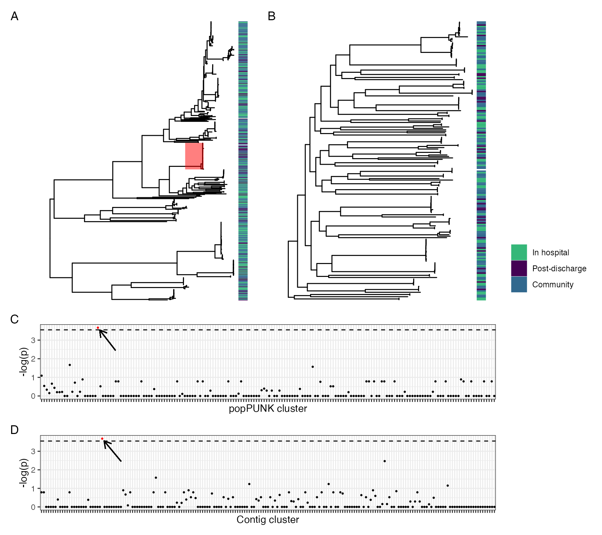

Analysis scripts: longitudinal ESBL carriage dynamics
analysis.RmdIntroduction
This document contains reproducing analysis code which generates the tables and figures for the manuscript:
Dynamics of gut mucosal colonisation with extended spectrum beta-lactamase producing Enterobacterales in Malawi
Joseph M Lewis1,2,3,4, , Madalitso Mphasa1, Rachel Banda1, Matthew Beale4, Eva Heinz2, Jane Mallewa5, Christopher Jewell6, Nicholas R Thomson4,7, Nicholas A Feasey1,2
- Malawi Liverpool Wellcome Clinical Research Programme, Blantyre, Malawi
- Liverpool School of Tropical Medicine, Liverpool, UK
- Department of Clinical Infection, Microbiology and Immunology, University of Liverpool, Liverpool, UK
- Wellcome Sanger Institute, Hinxton, UK
- College of Medicine, University of Malawi, Malawi
- University of Lancaster, Lanaster, UK
- London School of Tropical Medicine and Hygiene, London, UK
Installing and accessing data
If you just want the data, then all the data to replicate the analysis are bundled with the package. To install the package from GitHub:
install.packages("devtools")
devtools::install_github("https://github.com/joelewis101/blantyreESBL)The various data objects are described in the pkgdown site for this package, and available via R in the usual way (i.e. ?btESBL_participants brings up the definitions for the btESBL_participants data. They are all lazy loaded so will be available for use immediately; they all start with btESBL_ to make it easy to choose the one you want using autocomplete.
The analysis is available as a package vignette; this can be built when downloading the package by typing:
devtools::install_github("https://github.com/joelewis101/blantyreESBL", build_vignettes = TRUE, dependencies = TRUE )The dependencies = TRUE option will install all the packages necessary to run the vignettes.
Alternatively the source code for the vignette is analysis.Rmd in the vignettes/ folder of the GitHub repo or the pkgdown site for this package has a rendered version.
Descriptions of participants, exposures, baseline ESBL colonisation
Setup, load packages
knitr::opts_chunk$set(
collapse = TRUE,
comment = "#>"
)
library(DescTools)
library(here)
#> here() starts at /Users/joelewis/R/packages/blantyreESBL
library(igraph)
#>
#> Attaching package: 'igraph'
#> The following object is masked from 'package:DescTools':
#>
#> %c%
#> The following objects are masked from 'package:stats':
#>
#> decompose, spectrum
#> The following object is masked from 'package:base':
#>
#> union
library(ggraph)
#> Loading required package: ggplot2
library(dplyr)
#>
#> Attaching package: 'dplyr'
#> The following objects are masked from 'package:igraph':
#>
#> as_data_frame, groups, union
#> The following objects are masked from 'package:stats':
#>
#> filter, lag
#> The following objects are masked from 'package:base':
#>
#> intersect, setdiff, setequal, union
library(tidyr)
#>
#> Attaching package: 'tidyr'
#> The following object is masked from 'package:igraph':
#>
#> crossing
library(stringr)
library(lubridate)
#>
#> Attaching package: 'lubridate'
#> The following objects are masked from 'package:igraph':
#>
#> %--%, union
#> The following objects are masked from 'package:base':
#>
#> date, intersect, setdiff, union
library(purrr)
#>
#> Attaching package: 'purrr'
#> The following objects are masked from 'package:igraph':
#>
#> compose, simplify
library(forcats)
library(glue)
library(broom)
library(ggsci)
library(bayesplot)
#> This is bayesplot version 1.8.1
#> - Online documentation and vignettes at mc-stan.org/bayesplot
#> - bayesplot theme set to bayesplot::theme_default()
#> * Does _not_ affect other ggplot2 plots
#> * See ?bayesplot_theme_set for details on theme setting
library(patchwork)
library(loo)
#> This is loo version 2.4.1
#> - Online documentation and vignettes at mc-stan.org/loo
#> - As of v2.0.0 loo defaults to 1 core but we recommend using as many as possible. Use the 'cores' argument or set options(mc.cores = NUM_CORES) for an entire session.
#>
#> Attaching package: 'loo'
#> The following object is masked from 'package:igraph':
#>
#> compare
library(ggplotify)
library(pheatmap)
library(viridis)
#> Loading required package: viridisLite
library(ggtree)
#> ggtree v3.0.4 For help: https://yulab-smu.top/treedata-book/
#>
#> If you use ggtree in published research, please cite the most appropriate paper(s):
#>
#> 1. Guangchuang Yu. Using ggtree to visualize data on tree-like structures. Current Protocols in Bioinformatics, 2020, 69:e96. doi:10.1002/cpbi.96
#> 2. Guangchuang Yu, Tommy Tsan-Yuk Lam, Huachen Zhu, Yi Guan. Two methods for mapping and visualizing associated data on phylogeny using ggtree. Molecular Biology and Evolution 2018, 35(12):3041-3043. doi:10.1093/molbev/msy194
#> 3. Guangchuang Yu, David Smith, Huachen Zhu, Yi Guan, Tommy Tsan-Yuk Lam. ggtree: an R package for visualization and annotation of phylogenetic trees with their covariates and other associated data. Methods in Ecology and Evolution 2017, 8(1):28-36. doi:10.1111/2041-210X.12628
#>
#> Attaching package: 'ggtree'
#> The following object is masked from 'package:tidyr':
#>
#> expand
library(kableExtra)
#>
#> Attaching package: 'kableExtra'
#> The following object is masked from 'package:dplyr':
#>
#> group_rows
library(blantyreESBL)
specify_decimal <- function(x, k) trimws(format(round(x, k), nsmall = k))
p.lci <- function(x,n) {
return(binom.test(x,n)$conf.int[[1]])
}
p.uci <- function(x,n) {
return(binom.test(x,n)$conf.int[[2]])
}
write_figs <- TRUE
if (write_figs) {
if (!dir.exists(here("figures"))) {dir.create(here("figures"))}
if (!dir.exists(here("tables"))) {dir.create(here("tables"))}
if (!dir.exists(here("figures/long-modelling"))) {
dir.create(here("figures/long-modelling"))
}
if (!dir.exists(here("tables/long-modelling"))) {
dir.create(here("tables/long-modelling"))
}
}
#render(here("vignettes/analysis.Rmd", output_dir = "~/Documents/PhD/Manuscripts/2021012_esbl_carriage/manuscript/tables_and_figs/"))Baseline characteristics
btESBL_participants %>%
mutate(unprotected_water_source = case_when(
watersource %in% c("Unprotected well/spring",
"Surface water (including rainwater collection)") ~
"Yes",
TRUE ~ "No"),
toilet = case_when(
toilet == "Flush Toliet (any type)" ~ "Flush toilet",
TRUE ~ "Latrine or no toilet"),
watersource = case_when(
watersource %in% c("Unprotected well/spring",
"Surface water (including rainwater collection)") ~
"Unprotected",
TRUE ~ "Protected"),
keep.other = case_when(
keepanim == "No" ~ NA_character_,
keep.cattle == "Yes" ~ "Yes",
keep.mules == "Yes" ~ "Yes",
keep.sheep == "Yes" ~ "Yes",
TRUE ~ "No"),
tbongoing = if_else(is.na(tbongoing), "No", tbongoing)
) %>%
select(
c(arm,
calc_age,
ptsex,
hivstatus,
tbongoing,
hivonart,
art_time,
hivart,
hivcpt,
recieved_prehosp_ab,
pmhxrechospital,
toilet,
watersource,
watertreated,
householdchildno,
housholdadultsno,
electricityyn,
keepanim,
keep.poultry,
keep.dogs,
keep.goats,
keep.other)) -> t1.data
bind_rows(
t1.data %>%
select_if(is.character) %>%
pivot_longer(-arm) %>%
group_by(name, arm, value) %>%
tally() %>%
pivot_wider(
names_from = arm,
values_from = n,
values_fill = list(n = 0)
) %>%
filter(!is.na(value)) %>%
group_by(name) %>%
nest() %>%
mutate(p = map(
data,
~ select(.x, -value) %>%
fisher.test(simulate.p.value = TRUE) %>%
tidy() %>%
select(p.value)
)) %>%
unnest(c(data, p)) %>%
mutate(
str1 = glue('{`1`}/{sum(`1`)} ({specify_decimal(`1`*100/sum(`1`), 0)}%)'),
str2 = glue('{`2`}/{sum(`2`)} ({specify_decimal(`2`*100/sum(`2`), 0)}%)'),
str3 = glue('{`3`}/{sum(`3`)} ({specify_decimal(`3`*100/sum(`3`), 0)}%)'),
str_tot = glue(
'{`1` + `2` + `3`}/{sum(`1`) + sum(`2`) + sum(`3`)} ({specify_decimal((`1` + `2` + `3`)*100/(sum(`1`) + sum(`2`) + sum(`3`)), 0)}%)'
)
) %>%
filter(value != "No") %>%
select(name, value, str_tot, str1, str2, str3, p.value),
t1.data %>%
select(where(is.numeric) | contains("arm")) %>%
pivot_longer(-arm) %>%
group_by(name) %>% mutate(
p = kruskal.test(value ~ arm)$p.value,
median.t = median(value, na.rm = T),
lqr.t = quantile(value, 0.25, na.rm = T),
uqr.t = quantile(value, 0.75, na.rm = T),
Total = glue(
'{specify_decimal(median.t,1)} ({specify_decimal(lqr.t,1)}-{specify_decimal(uqr.t,1)})'
)
) %>%
group_by(name, arm) %>% summarise(
median = median(value, na.rm = T),
lqr = quantile(value, 0.25, na.rm = T),
uqr = quantile(value, 0.75, na.rm = T),
strz = glue(
'{specify_decimal(median,1)} ({specify_decimal(lqr,1)}-{specify_decimal(uqr,1)})'
),
p = unique(p),
Total = unique(Total)
) %>% select(name, arm, strz, p, Total) %>%
mutate(arm = paste0("str", arm)) %>%
pivot_wider(
id_cols = c(name, p, Total),
names_from = arm,
values_from = strz
) %>%
rename(p.value = p,
str_tot = Total)
) %>%
mutate(value = if_else(is.na(value), name, value)) -> t1
#> `summarise()` has grouped output by 'name'. You can override using the `.groups` argument.
t1 %>%
filter(
value != "Unprotected",
value != "Latrine or no toilet",
value != "Female",
value != "ART regimen: other"
) %>%
mutate(
value = if_else(name == "hivstatus",
paste0("HIV ",str_to_title(value)), value),
value = case_when(
name == "householdchildno" ~ "Number of children",
name == "housholdadultsno" ~ "Number of adults",
name == "calc_age" ~ "Age (yr)",
name == "art_time" ~ "Months on ART",
name == "hivonart"~ "Current ART",
name == "hivcpt" ~ "Current CPT",
value == "5A" ~ "ART regimen: EFV/3TC/TDF",
# name == "tbstatus" ~ "Ever treated for TB",
name == "tbongoing" ~ "Current TB treatment",
name == "recieved_prehosp_ab" ~ "Antibiotics within 28 days<sup>†</sup>",
name == "pmhxrechospital" ~ "Hospitalised within 28 days",
name == "watertreated" ~ "Treat drinking water with chlorine",
value == "Protected" ~ "Protected water source<sup>§</sup>",
name == "keepanim" ~ "Keep animals",
name == "electricityyn" ~ "Electricty in house",
grepl("keep", name) ~ str_to_title(gsub("keep\\.","", name)),
value == "Flush toilet" ~ "Flush toilet<sup>‡</sup>",
TRUE ~ value),
# ---
name = case_when(
grepl("keep\\.", name) |
name %in% c( "householdchildno", "housholdadultsno",
"keepanim", "electricityyn") ~ "Household",
name %in% c("calc_age", "ptsex") ~ "Demographics",
name %in% c("hivstatus") ~ "HIV status",
name %in% c("tbstatus", "tbongoing") ~ "Healthcare exposure",
grepl("art", name) | grepl("cpt", name) ~ "ART status*",
name %in% c("recieved_prehosp_ab", "pmhxrechospital", "tbongoing") ~
"Healthcare exposure",
name %in% c("toilet", "watertreated", "watersource") ~ "Household",
TRUE ~ name
),
# ---
name = factor(
name,
levels = c(
"Demographics",
"HIV status",
"ART status*",
"Healthcare exposure",
"Household"
)),
value = factor(
value,
levels = c(
"Age (yr)",
"Male",
"HIV Reactive",
"Current CPT",
"Current ART",
"ART regimen: EFV/3TC/TDF",
"Months on ART",
"HIV Non Reactive",
"HIV Unknown",
"Antibiotics within 28 days<sup>†</sup>",
"Hospitalised within 28 days",
"Current TB treatment",
"Number of adults",
"Number of children",
"Keep animals",
"Poultry",
"Dogs",
"Goats",
"Other",
"Electricty in house",
"Flush toilet<sup>‡</sup>",
"Protected water source<sup>§</sup>",
"Treat drinking water with chlorine"
))) -> t1
t1 %>%
arrange(name, value) %>%
mutate(p.value = specify_decimal(p.value,3),
p.value = if_else(p.value == "0.000", "<0.001", p.value),
p.value = case_when(
value %in% c("HIV Non Reactive",
"HIV Unknown",
"Poultry",
"Dogs",
"Goats",
"Other") ~ "",
TRUE ~ p.value)) -> t1
t1 %>%
dplyr::group_by(name, .drop = TRUE) %>%
summarise(n = n()) %>%
pull(n) -> groupvar
names(groupvar) <- unique(t1$name)
indentrows <- which(t1$value %in%
c("Poultry",
"Dogs",
"Goats",
"Other"))
t1 %>%
ungroup() %>%
select(value, str1, str2, str3, p.value,str_tot) %>%
kbl(col.names =
c(
"Variable",
"Sepsis (n=225)",
"Inpatient (n=100)",
"Community (n=100)",
"p",
"Total (n = 425)"
),
escape = FALSE,
caption = "Baseline characteristics of included participants") %>%
kable_classic(full_width = F) %>%
pack_rows(index = groupvar) %>%
row_spec(indentrows, italic = TRUE ) %>%
footnote(
general = "ART = Antiretroviral therapy, CPT = Cotrimoxazole preventative therapy, EFV: Efavirenz, 3TC: Lamivudine, TDF: Tenofovir. Numeric variables are summarised as median (IQR) and categorical variables as proportions. P-values are from Fisher's exact test (categorical variables) or Kruskal-Wallace test (continuous variables) across the three groups; p-value for HIV status compares distribution of HIV reactive, non-reactive and unknown across the three groups. In smoe cases denominator may be less than the total number of participants due to missing data.",
symbol = c(
"Denominator for ART status is HIV reactive participants only",
"Excluding TB treatment and CPT",
"Flush toilet vs latrine (pit or hanging) or no toilet",
"Protected water source includes borehole, water piped into or outside dwelling or public standpipe; unprotected sources include surface water or unprotected springs."
)
)| Variable | Sepsis (n=225) | Inpatient (n=100) | Community (n=100) | p | Total (n = 425) |
|---|---|---|---|---|---|
| Demographics | |||||
| Age (yr) | 35.9 (27.8-43.5) | 40.4 (29.1-48.3) | 32.5 (24.0-38.4) | <0.001 | 35.6 (26.9-43.9) |
| Male | 114/225 (51%) | 51/100 (51%) | 40/100 (40%) | 0.172 | 205/425 (48%) |
| HIV status | |||||
| HIV Reactive | 143/225 (64%) | 12/100 (12%) | 18/100 (18%) | <0.001 | 173/425 (41%) |
| HIV Non Reactive | 70/225 (31%) | 77/100 (77%) | 22/100 (22%) | 169/425 (40%) | |
| HIV Unknown | 12/225 (5%) | 11/100 (11%) | 60/100 (60%) | 83/425 (20%) | |
| ART status* | |||||
| Current CPT | 98/141 (70%) | 5/12 (42%) | 7/18 (39%) | 0.009 | 110/171 (64%) |
| Current ART | 117/143 (82%) | 9/12 (75%) | 18/18 (100%) | 0.071 | 144/173 (83%) |
| ART regimen: EFV/3TC/TDF | 110/117 (94%) | 8/9 (89%) | 17/18 (94%) | 0.625 | 135/144 (94%) |
| Months on ART | 28.7 (3.7-72.6) | 35.1 (2.9-79.8) | 31.5 (13.0-79.9) | 0.698 | 29.5 (3.8-72.8) |
| Healthcare exposure | |||||
| Antibiotics within 28 days† | 60/225 (27%) | 0/100 (0%) | 0/100 (0%) | <0.001 | 60/425 (14%) |
| Hospitalised within 28 days | 18/225 (8%) | 1/100 (1%) | 0/100 (0%) | 0.001 | 19/425 (4%) |
| Current TB treatment | 10/225 (4%) | 0/100 (0%) | 4/100 (4%) | 0.080 | 14/425 (3%) |
| Household | |||||
| Number of adults | 2.0 (2.0-3.0) | 3.0 (2.0-4.0) | 2.0 (2.0-4.0) | 0.907 | 3.0 (2.0-4.0) |
| Number of children | 2.0 (1.0-3.0) | 2.0 (1.0-3.0) | 2.0 (1.0-3.0) | 0.395 | 2.0 (1.0-3.0) |
| Keep animals | 71/225 (32%) | 43/100 (43%) | 15/100 (15%) | 0.001 | 129/425 (30%) |
| Poultry | 46/71 (65%) | 34/43 (79%) | 10/15 (67%) | 90/129 (70%) | |
| Dogs | 18/71 (25%) | 11/43 (26%) | 9/15 (60%) | 38/129 (29%) | |
| Goats | 12/71 (17%) | 7/43 (16%) | 1/15 (7%) | 20/129 (16%) | |
| Other | 3/71 (4%) | 6/43 (14%) | 0/15 (0%) | 9/129 (7%) | |
| Electricty in house | 119/225 (53%) | 41/100 (41%) | 58/100 (58%) | 0.043 | 218/425 (51%) |
| Flush toilet‡ | 14/225 (6%) | 5/100 (5%) | 1/100 (1%) | 0.115 | 20/425 (5%) |
| Protected water source§ | 216/225 (96%) | 92/100 (92%) | 98/100 (98%) | 0.122 | 406/425 (96%) |
| Treat drinking water with chlorine | 19/225 (8%) | 5/100 (5%) | 0/100 (0%) | 0.002 | 24/425 (6%) |
| Note: | |||||
| ART = Antiretroviral therapy, CPT = Cotrimoxazole preventative therapy, EFV: Efavirenz, 3TC: Lamivudine, TDF: Tenofovir. Numeric variables are summarised as median (IQR) and categorical variables as proportions. P-values are from Fisher’s exact test (categorical variables) or Kruskal-Wallace test (continuous variables) across the three groups; p-value for HIV status compares distribution of HIV reactive, non-reactive and unknown across the three groups. In smoe cases denominator may be less than the total number of participants due to missing data. | |||||
| * Denominator for ART status is HIV reactive participants only | |||||
| † Excluding TB treatment and CPT | |||||
| ‡ Flush toilet vs latrine (pit or hanging) or no toilet | |||||
| § Protected water source includes borehole, water piped into or outside dwelling or public standpipe; unprotected sources include surface water or unprotected springs. | |||||
Exposures
c("Amoxicillin" = "amoxy",
"Gentamicin" = "genta",
"Azithromycin" = "azithro",
"TB therapy" = "tb",
"Penicillin" = "benzy",
"Fluconazole" = "fluco",
"Ceftriaxone" = "cefo",
"Amphotericin" = "ampho",
"Quinine" = "quin",
"Chloramphenicol" = "chlora",
"LA" = "coart",
"Ciprofloxacin" = "cipro",
"Co-amoxiclav" = "coamo",
"Artesunate" = "arte",
"Cotrimoxazole" = "cotri",
"Clindamycin" = "clinda",
"Doxycycline" = "doxy",
"Erythromycin" = "erythro",
"Aciclovir" = "acicl",
"Flucloxacillin" = "fluclox",
"Metronidazole" = "metro",
"Streptomycin" = "strepto",
"Hospitalised" = "hosp"
) -> rename_lookup
btESBL_exposures %>%
group_by(pid) %>%
complete(assess_type = c(0:max(assess_type))) %>%
fill(everything()) %>%
rename(!!!rename_lookup) %>%
ungroup() %>%
left_join(select(btESBL_participants, pid, arm)) %>%
mutate(arm = case_when(
arm == 1 ~ "Sepsis",
arm == 2 ~ "Inpatient",
arm == 3 ~ "Community"),
arm = factor(arm, levels = c("Sepsis", "Inpatient", "Community"))
) %>%
select(-c(pid, died)) %>% #filter(arm != 3) %>%
pivot_longer(-c(assess_type, arm)) %>%
group_by(arm, assess_type, name) %>%
summarise(n = n(), x = sum(value == 1), prop = x/n) %>%
filter(
name %in% c(
"Amoxicillin",
"Ceftriaxone",
"Ciprofloxacin",
"Cotrimoxazole",
"Hospitalised",
"TB therapy",
"Hospitalised"
)) %>%
ungroup() %>%
ggplot(aes(assess_type,prop, group = name, color = name, linetype = name)) +
geom_line(alpha = 0.8, size = 0.75) +
facet_wrap(~ arm, ncol = 1) +
theme_bw() +
scale_x_continuous(breaks = c(0,5,10,15,20,25,30), limits = c(0,30)) +
scale_linetype_manual(values = c("Amoxicillin" = "solid",
"Ceftriaxone" = "solid",
"Ciprofloxacin" = "solid",
"Cotrimoxazole" = "solid",
"Hospitalised" = "dashed",
"TB therapy" = "dotted"),
breaks = c("Hospitalised",
"Ceftriaxone",
"Cotrimoxazole",
"Ciprofloxacin",
"TB therapy",
"Amoxicillin")) +
scale_colour_manual(values = c("Amoxicillin" = pal_npg()(4)[1],
"Ceftriaxone" = pal_npg()(4)[2],
"Ciprofloxacin" = pal_npg()(4)[3],
"Cotrimoxazole" = pal_npg()(4)[4],
"Hospitalised" = "black",
"TB therapy" = "grey20"),
breaks = c("Hospitalised",
"Ceftriaxone",
"Cotrimoxazole",
"Ciprofloxacin",
"TB therapy",
"Amoxicillin")) +
theme(legend.title = element_blank()) +
xlab("Day post enrolment") +
ylab("Proportion") -> exp_plot
#> Joining, by = "pid"
#> `summarise()` has grouped output by 'arm', 'assess_type'. You can override using the `.groups` argument.
if (write_figs) {
ggsave(here("figures/long-modelling/SUP_FIG_exposures.pdf"),exp_plot,width = 8, height = 5)
ggsave(here("figures/long-modelling/SUP_FIG_exposures.svg"),exp_plot,width = 8, height = 5)
}
#> Warning: Removed 3042 row(s) containing missing values (geom_path).
#> Warning: Removed 3042 row(s) containing missing values (geom_path).
exp_plot
#> Warning: Removed 3042 row(s) containing missing values (geom_path).Exposures during study period. Panels show proportion of participants in each arm of the study who are hospitalised of exposed to antimicrobials on a given day
btESBL_exposures %>%
group_by(pid) %>%
complete(assess_type = c(0:max(assess_type))) %>%
fill(everything()) %>%
rename(!!!rename_lookup) %>%
left_join(select(btESBL_participants, pid, arm)) %>%
select(-c(assess_type, died)) %>%
group_by(arm) %>%
mutate('Total at risk' = 1) %>%
pivot_longer(-c(pid, arm)) %>%
filter(value > 0) %>%
group_by(pid, name, arm) %>%
summarise(pid.exp = sum(value)) %>% group_by(arm, name) %>%
summarise(
n.p = length(unique(pid)),
exposure = sum(pid.exp),
median.exp.len = median(pid.exp),
lq.exp.len = quantile(pid.exp, 0.25),
uq.exp.len = quantile(pid.exp, 0.75)
) %>%
mutate(
exp.len.str = paste0(
specify_decimal(median.exp.len, 0),
"(",
specify_decimal(lq.exp.len, 0),
"-",
specify_decimal(uq.exp.len, 0),
")"
),
exposure = as.character(exposure)
) %>%
select(name, arm, n.p, exposure, exp.len.str) %>%
mutate(
exp.len.str =
case_when(name == "Total" ~ "-",
TRUE ~ exp.len.str)) %>%
pivot_wider(
names_from = arm,
values_from = c(n.p, exposure, exp.len.str),
values_fill = list(
n.p = 0,
exposure = "0",
exp.len.str = "-"
)
) %>%
arrange(desc(n.p_1), desc(name)) %>%
kable(
col.names = c("Exposure", rep(c("Sepsis", "Inpatient", "Community"),3)),
caption = "Antimicrobial and hospital exposure stratified by arm") %>%
kable_classic(full_width = FALSE) %>%
#row_spec(1, bold = TRUE) %>%
pack_rows("Exposures", 2, 23) %>%
add_header_above(c(" " = 1, "Number exposed" = 3, "Exposure (person-days)" = 3,
"Median (IQR) exposure length (days)" = 3)) %>%
footnote(general = "TB = tuberculosis, LA =lumefantrine artemether. Median exposure length includes only those exposed. Total at risk shows the total number of participants and participant-days of follow up included in the study.")
#> Joining, by = "pid"
#> `summarise()` has grouped output by 'pid', 'name'. You can override using the `.groups` argument.
#> `summarise()` has grouped output by 'arm'. You can override using the `.groups` argument.|
Number exposed
|
Exposure (person-days)
|
Median (IQR) exposure length (days)
|
|||||||
|---|---|---|---|---|---|---|---|---|---|
| Exposure | Sepsis | Inpatient | Community | Sepsis | Inpatient | Community | Sepsis | Inpatient | Community |
| Total at risk | 225 | 100 | 100 | 33797 | 14336 | 21983 | 183(63-203) | 182(97-187) | 200(185-219) |
| Exposures | |||||||||
| Hospitalised | 225 | 100 | 1 | 1727 | 500 | 1 | 5(2-10) | 2(2-7) | 1(1-1) |
| Ceftriaxone | 183 | 7 | 0 | 997 | 26 | 0 | 5(3-7) | 3(2-4) |
|
| Cotrimoxazole | 110 | 6 | 7 | 14447 | 549 | 1388 | 180(27-190) | 86(6-177) | 190(183-206) |
| Ciprofloxacin | 61 | 2 | 0 | 398 | 12 | 0 | 7(5-7) | 6(6-6) |
|
| TB therapy | 52 | 2 | 0 | 6843 | 291 | 0 | 178(58-180) | 146(133-158) |
|
| Amoxicillin | 38 | 3 | 1 | 235 | 21 | 5 | 7(5-7) | 5(5-8) | 5(5-5) |
| Fluconazole | 27 | 0 | 0 | 118 | 0 | 0 | 3(2-5) |
|
|
| Metronidazole | 24 | 2 | 0 | 148 | 10 | 0 | 6(2-7) | 5(5-5) |
|
| Artesunate | 11 | 0 | 0 | 25 | 0 | 0 | 2(2-3) |
|
|
| Co-amoxiclav | 10 | 2 | 0 | 40 | 12 | 0 | 5(2-5) | 6(6-6) |
|
| LA | 7 | 0 | 0 | 19 | 0 | 0 | 3(2-3) |
|
|
| Doxycycline | 7 | 0 | 0 | 34 | 0 | 0 | 3(2-6) |
|
|
| Erythromycin | 5 | 0 | 0 | 38 | 0 | 0 | 7(5-11) |
|
|
| Gentamicin | 4 | 0 | 0 | 15 | 0 | 0 | 4(3-5) |
|
|
| Streptomycin | 2 | 0 | 0 | 16 | 0 | 0 | 8(7-9) |
|
|
| Penicillin | 2 | 0 | 0 | 5 | 0 | 0 | 2(2-3) |
|
|
| Flucloxacillin | 2 | 0 | 0 | 5 | 0 | 0 | 2(2-3) |
|
|
| Azithromycin | 2 | 2 | 0 | 7 | 12 | 0 | 4(3-4) | 6(6-6) |
|
| Amphotericin | 2 | 0 | 0 | 8 | 0 | 0 | 4(4-4) |
|
|
| Aciclovir | 2 | 0 | 0 | 47 | 0 | 0 | 24(16-31) |
|
|
| Quinine | 1 | 0 | 0 | 1 | 0 | 0 | 1(1-1) |
|
|
| Chloramphenicol | 1 | 0 | 0 | 1 | 0 | 0 | 1(1-1) |
|
|
| Note: | |||||||||
| TB = tuberculosis, LA =lumefantrine artemether. Median exposure length includes only those exposed. Total at risk shows the total number of participants and participant-days of follow up included in the study. | |||||||||
Timing of sample collection
btESBL_stoolESBL %>%
filter(visit != 0) %>%
mutate(visit = paste0("Visit ", visit)) %>%
ggplot(aes(as.numeric(t), group = as.factor(visit))) +
geom_histogram(bins = 60) +
facet_wrap(~ visit,
scale = 'free_y',
ncol = 1,
strip.position = "right") +
xlim(c(0, 300)) +
theme_bw() +
xlab("Time post enrolment (days)") +
ylab("n") -> samp_col_dates
samp_col_dates
#> Warning: Removed 7 rows containing non-finite values (stat_bin).
#> Warning: Removed 8 rows containing missing values (geom_bar).
Timing of sample collection showing long tails around sample collection time.
if (write_figs) {
ggsave(here("figures/long-modelling/SUP_FIG_sample_collection_dates.pdf"),
samp_col_dates,
width = 6,
height = 4)
ggsave(here("figures/long-modelling/SUP_FIG_sample_collection_dates.svg"),
samp_col_dates,
width = 4,
height = 4)
}
#> Warning: Removed 7 rows containing non-finite values (stat_bin).
#> Warning: Removed 8 rows containing missing values (geom_bar).
#> Warning: Removed 7 rows containing non-finite values (stat_bin).
#> Warning: Removed 8 rows containing missing values (geom_bar).Species of cultured bacteria from stool
btESBL_stoolorgs %>%
mutate(
organism =
case_when(organism == "pantoea sp" ~ "italic('Panotea')~species",
organism == "Gram negative bacilli" ~
"paste('Gram negative bacilli', '*')",
organism == "Klebsiella pneumoniae" ~
"italic('Klebsiella pneumoniae')~complex",
grepl("species", organism) ~
paste0(
"italic('",
gsub(" species", "", organism),
"')~species"
),
TRUE ~ paste0("italic('", organism, "')")),
organism = fct_rev(fct_infreq(organism))
) %>%
{ggplot(data = . , aes(organism, fill = ESBL)) +
geom_bar() +
coord_flip() +
labs(y = "n",
x = "") +
theme_bw() +
scale_x_discrete(labels = parse(
text = unique(as.character(sort(.$organism)))
))
} -> stool_spec
stool_spec +
scale_fill_manual(values = viridis_pal(option = "cividis")(4)[c(3,1)]) ->
stool_spec
stool_spec
Species cultured from stool.
Antimicrobial sensitivity testins (AST) of E. coli and K. pneumoniae isolates
# sorting fn
res <- function(x) {
return(sum(x == "Resistant", na.rm = TRUE))
}
btESBL_AST %>%
select(-supplier_name) %>%
pivot_longer(-organism) %>%
mutate(value = if_else(is.na(value), "Missing", value),
value = factor(value,
levels =
rev(c("Resistant",
"Intermediate",
"Sensitive",
"Missing"))),
name = str_to_title(name)) %>%
ggplot(aes(fct_reorder(name, value, .fun = res), fill = value)) +
geom_bar() +
facet_wrap(~organism, scales = "free_x") +
coord_flip() +
scale_fill_manual(values = viridis_pal(option = "cividis")(4),
breaks = c("Resistant",
"Intermediate",
"Sensitive",
"Missing")
) +
theme_bw() +
labs(
x = "Antimicrobial",
y = "Number of isolates",
fill = "" ) -> ast_plot
ast_plotResults of antimicrobial sensitivity testing of cultured E. coli and K. pneumoniae sequence complex (KpSC) isolates using the disc diffusion method.
Plasmid replicons
btESBL_plasmidreplicons %>%
mutate(ref_seq = gsub("_.+$","", ref_seq),
ref_seq = gsub("\\.[0-9]","", ref_seq),
species = if_else(
grepl("K. pneum", species),
"KpSC",
species)
# ,
# ref_seq = case_when(
# grepl("Col", ref_seq) ~ "Col",
# grepl("rep", ref_seq) ~ "rep",
# grepl("^FIA", ref_seq) ~ "IncFIA",
# !grepl("Inc", ref_seq) ~ "Other",
# TRUE ~ ref_seq
) %>%
filter(grepl("Inc", ref_seq)) %>%
ggplot(aes(fct_rev(fct_infreq(ref_seq)))) +
geom_bar() +
coord_flip() +
theme_bw() +
labs(y = "Number of samples",
x = "Plasmid replicon") +
facet_wrap(~species, scales = "free_x") -> plasmid_replicons_plot
plasmid_replicons_plotDistribution of plasmid incompatibility groups in the isolates. KpSC = Klebsiella pneumoniae sequence complex.
Baseline associations of ESBL colonisation
# helper function for univariable ods ratios
univ_or <- function(df, oc_var) {
out <- list()
varz <- names(df)
varz <- varz[!grepl(oc_var, varz)]
for (i in 1:length(varz)) {
form <- formula(paste0(oc_var, " ~ " ,varz[i]))
modout <- glm(formula = form, data = df, family = "binomial")
dfout <- tidy(modout, conf.int = TRUE)
dfout[c(2,3,6,7)] <- sapply(dfout[c(2,3,6,7)], exp)
dfout <- dplyr::select(dfout, term, estimate, conf.low, conf.high, p.value)
dfout <- dplyr::filter(dfout, term != "(Intercept)")
out[[i]] <- dfout
}
out <- do.call(rbind, out)
return(out)
}
# get the variables we need
btESBL_participants %>%
select(
pid,
arm,
calc_age,
ptsex,
hivstatus,
hivonart,
hivcpt,
tbongoing,
recieved_prehosp_ab,
pmhxrechospital,
watersource,
watertreated,
toilet,
housholdadultsno,
householdchildno,
keepanim,
enroll_date
) %>%
left_join(
btESBL_stoolESBL %>%
filter(visit == 0) %>%
select(pid, ESBL)
) %>%
mutate(
toilet = case_when(
toilet == "Flush Toliet (any type)" ~ "Flush toilet",
TRUE ~ "Latrine or no toilet"
),
watersource = case_when(
watersource %in% c(
"Unprotected well/spring",
"Surface water (including rainwater collection)"
) ~
"Unprotected",
TRUE ~ "Protected"
),
season = case_when(
month(enroll_date) >= 11 | month(enroll_date) <= 4 ~ "rainy",
TRUE ~ "dry"),
arm = case_when(
arm == 1 ~ "Sepsis",
arm == 2 ~ "Inpatient",
arm == 3 ~ "Community"),
ESBL = if_else(ESBL == "Positive", 1,0)) %>%
mutate(across(matches("hiv|tb"), ~ if_else(is.na(.x), "No", .x))) %>%
select(-c("pid", "enroll_date")) ->
bl.esbl
#> Joining, by = "pid"
# fit models
left_join(
univ_or(bl.esbl, "ESBL") %>%
mutate(op = paste0(specify_decimal(estimate,2), " (",
specify_decimal(conf.low,2), "-",
specify_decimal(conf.high,2), ")")
),
tidy(
glm(ESBL ~ ., data = bl.esbl, family = binomial(link = "logit")),
conf.int = TRUE) %>%
select( term, estimate, conf.low, conf.high, p.value) %>%
mutate(across(!matches("term|p"), exp)) %>%
filter(term != "(Intercept)") %>%
mutate(op = paste0(specify_decimal(estimate,2), " (",
specify_decimal(conf.low,2), "-",
specify_decimal(conf.high,2), ")")
),
by = "term",
suffix = c("_uv", "_mv")) -> log_regESBL
# recode variables lookup vector
recode.str <- c(calc_age = "Age (per year)",
ptsexMale = "Male sex (vs female)",
armInpatient = "Inpatient (vs community)",
armSepsis = "Sepsis (vs community)",
hivstatusReactive = "HIV+ (vs HIV-)",
hivstatusUnknown = "HIV unknown (vs HIV-)",
hivcptYes = "CPT (vs none)",
pmhxrechospitalYes = "Hospitalisation",
recieved_prehosp_abYes = "Antibiotics*",
tbongoingYes = "Current TB treatment",
housholdadultsno = "Adults (per 1)",
householdchildno = "Children (per 1)",
keepanimYes = "Keep animals (vs. not)",
`toiletLatrine or no toilet` = "Flushing toilet (vs. not)",
watersourceUnprotected = "Unprotected water source",
watertreatedYes = "Treat water (vs not)",
seasonrainy = "Rainy season (vs. dry)"
)
log_regESBL %>%
mutate(across(matches("p\\.value"), ~ case_when(
.x < 0.001 ~ "<0.001",
TRUE ~ specify_decimal(.x, 3)))
) %>%
select(term,op_uv, p.value_uv,
op_mv, p.value_mv) %>%
mutate(term = recode_factor(term, !!!recode.str, .ordered = TRUE)) %>%
kable( col.names = c("Variable",
"OR (95\\% CI)",
"p-value",
"aOR (95\\% CI)",
"p-value"),
caption = "Univariable and multivariable associations of ESBL colonisation at enrolment") %>%
kable_classic(full_width = FALSE) %>%
column_spec(2:3, bold = log_regESBL$p.value_uv < 0.05) %>%
column_spec(4:5, bold = log_regESBL$p.value_mv < 0.05) %>%
pack_rows("Study Arm", 1,2, bold = FALSE) %>%
pack_rows("Demographics", 3,4, bold = FALSE) %>%
pack_rows("HIV status", 5,8, bold = FALSE) %>%
pack_rows("Healthcare exposure", 9,11, bold = FALSE) %>%
pack_rows("Household", 12,17, bold = FALSE) %>%
pack_rows("Season", 18,18, bold = FALSE) %>%
add_header_above(c(" " = 1, "Univariable" = 2, "Multivariable" = 2)) %>%
footnote(general = "CPT = Cotrimoxazole preventative therapy, ART = antiretroviral therapy, TB = tuberculosis. Entries in bold are those for which 95% confidence intervals do not cross 1.", symbol = "Antibiotics includes TB therapy but excludes CPT.") |
Univariable
|
Multivariable
|
|||
|---|---|---|---|---|
| Variable | OR (95% CI) | p-value | aOR (95% CI) | p-value |
| Study Arm | ||||
| Inpatient (vs community) | 1.79 (1.00-3.26) | 0.054 | 1.68 (0.81-3.53) | 0.164 |
| Sepsis (vs community) | 2.45 (1.48-4.12) | <0.001 | 1.08 (0.54-2.22) | 0.822 |
| Demographics | ||||
| Age (per year) | 1.00 (0.99-1.02) | 0.709 | 1.00 (0.98-1.02) | 0.922 |
| Male sex (vs female) | 1.23 (0.84-1.82) | 0.287 | 1.44 (0.94-2.21) | 0.098 |
| HIV status | ||||
| HIV+ (vs HIV-) | 1.68 (1.09-2.59) | 0.018 | 1.21 (0.48-2.99) | 0.679 |
| HIV unknown (vs HIV-) | 0.71 (0.40-1.24) | 0.229 | 1.08 (0.54-2.16) | 0.820 |
| hivonartYes | 1.99 (1.32-3.00) | 0.001 | 1.07 (0.35-3.23) | 0.905 |
| CPT (vs none) | 2.46 (1.58-3.86) | <0.001 | 2.34 (1.00-5.66) | 0.053 |
| Healthcare exposure | ||||
| Current TB treatment | 1.02 (0.33-2.99) | 0.971 | 0.51 (0.13-1.80) | 0.300 |
| Antibiotics* | 1.81 (1.05-3.16) | 0.034 | 1.24 (0.64-2.41) | 0.528 |
| Hospitalisation | 7.87 (2.57-34.22) | 0.001 | 6.64 (1.98-30.75) | 0.005 |
| Household | ||||
| Unprotected water source | 2.43 (0.96-6.64) | 0.068 | 2.96 (1.07-8.75) | 0.040 |
| Treat water (vs not) | 1.16 (0.50-2.66) | 0.725 | 0.95 (0.37-2.37) | 0.913 |
| Flushing toilet (vs. not) | 0.72 (0.29-1.80) | 0.481 | 1.11 (0.41-3.04) | 0.842 |
| Adults (per 1) | 1.14 (0.99-1.31) | 0.064 | 1.20 (1.03-1.40) | 0.024 |
| Children (per 1) | 1.00 (0.87-1.14) | 0.979 | 0.98 (0.84-1.13) | 0.747 |
| Keep animals (vs. not) | 1.33 (0.88-2.03) | 0.176 | 1.15 (0.72-1.84) | 0.552 |
| Season | ||||
| Rainy season (vs. dry) | 2.05 (1.38-3.06) | <0.001 | 2.21 (1.40-3.50) | <0.001 |
| Note: | ||||
| CPT = Cotrimoxazole preventative therapy, ART = antiretroviral therapy, TB = tuberculosis. Entries in bold are those for which 95% confidence intervals do not cross 1. | ||||
| * Antibiotics includes TB therapy but excludes CPT. | ||||
Describing and modelling longitudinal ESBL carriage
Longitudinal carriage plot
left_join(
btESBL_stoolESBL %>%
group_by(arm, visit) %>%
summarise(n = n(),
n_esbl = sum(ESBL == "Positive")),
btESBL_stoolESBL %>%
left_join(btESBL_stoolorgs %>%
filter(ESBL == "Positive") %>%
select(lab_id,organism)) %>%
group_by(arm, visit) %>%
summarise(
n_esco = sum(organism == "Escherichia coli", na.rm = TRUE),
n_kleb = sum(organism == "Klebsiella pneumoniae", na.rm = TRUE)
)
) %>%
mutate(
esbl_str = paste0(n_esbl, " (",
specify_decimal(n_esbl * 100 / n, 0),
"%)"),
esco_str = paste0(n_esco, " (",
specify_decimal(n_esco * 100 / n, 0),
"%)"),
kleb_str = paste0(n_kleb, " (",
specify_decimal(n_kleb * 100 / n, 0),
"%)"),
n = as.character(n)
) %>%
select(visit, arm, n, esbl_str, esco_str, kleb_str) %>%
pivot_wider(
id_cols = visit ,
names_from = arm,
values_from = c("n", "esbl_str", "esco_str", "kleb_str"),
values_fill = "-"
) %>%
select(
visit,
n_1,
esbl_str_1,
esco_str_1,
kleb_str_1,
n_2,
esbl_str_2,
esco_str_2,
kleb_str_2,
n_3,
esbl_str_3,
esco_str_3,
kleb_str_3
) %>%
mutate(
visit = case_when(
visit == 0 ~ "Baseline",
visit == 1 ~ "Day 7",
visit == 2 ~ "Day 28",
visit == 3 ~ "Day 90",
visit == 4 ~ "Day 180"
)) %>%
kable(col.names = c("Visit", rep(
c("n", "ESBL", "E. coli", "K. pneumo"), 3
)),
caption = "ESBL, E. coli and K. pneumoniae prevalence in stool at study visits, stratified by study arm.") %>%
kable_classic(full_width = FALSE) %>%
add_header_above(c(
" " = 1,
"Sepsis" = 4,
"Inpatient" = 4,
"Community" = 4
))
#> `summarise()` has grouped output by 'arm'. You can override using the `.groups` argument.
#> Joining, by = "lab_id"
#> `summarise()` has grouped output by 'arm'. You can override using the `.groups` argument.
#> Joining, by = c("arm", "visit")|
Sepsis
|
Inpatient
|
Community
|
||||||||||
|---|---|---|---|---|---|---|---|---|---|---|---|---|
| Visit | n | ESBL | E. coli | K. pneumo | n | ESBL | E. coli | K. pneumo | n | ESBL | E. coli | K. pneumo |
| Baseline | 222 | 109 (49%) | 98 (44%) | 34 (15%) | 99 | 41 (41%) | 35 (35%) | 10 (10%) | 99 | 28 (28%) | 25 (25%) | 6 (6%) |
| Day 7 | 162 | 127 (78%) | 122 (75%) | 45 (28%) | 63 | 32 (51%) | 27 (43%) | 8 (13%) |
|
|
|
|
| Day 28 | 148 | 106 (72%) | 97 (66%) | 46 (31%) | 71 | 37 (52%) | 30 (42%) | 16 (23%) | 92 | 29 (32%) | 23 (25%) | 9 (10%) |
| Day 90 | 126 | 71 (56%) | 62 (49%) | 24 (19%) | 60 | 29 (48%) | 25 (42%) | 4 (7%) |
|
|
|
|
| Day 180 | 127 | 61 (48%) | 55 (43%) | 24 (19%) | 65 | 29 (45%) | 23 (35%) | 5 (8%) | 82 | 23 (28%) | 18 (22%) | 2 (2%) |
fills = c("#A25050","#6497b1","#7cb9b9")
cols = c("#8F2727","#03396c","#278f8f")
# get first ab exposure
btESBL_stoolESBL %>%
left_join(
btESBL_exposures %>%
group_by(pid) %>%
complete(assess_type = c(0:max(assess_type))) %>%
fill(everything()) %>% rowwise() %>%
mutate(any_abx = any(c_across(!matches(
"pid|assess|hosp|died"
)) == 1)) %>%
group_by(pid) %>%
filter(any_abx == 1) %>%
arrange(pid, assess_type) %>%
slice(n = 1) %>%
mutate(first_ab = assess_type) %>%
select(pid, first_ab)) %>%
# and hospital exposure
left_join(
btESBL_exposures %>%
group_by(pid) %>%
complete(assess_type = c(0:max(assess_type))) %>%
fill(everything()) %>%
group_by(pid) %>%
filter(hosp == 1) %>%
arrange(pid, assess_type) %>%
slice(n=1) %>%
mutate(first_hosp = assess_type) %>%
select(pid, first_hosp)) %>%
# censor as described
filter(
!(arm == 2 & !is.na(first_ab) & first_ab < t),
!(arm == 3 & !is.na(first_ab) & first_ab < t),
!(arm == 3 & !is.na(first_hosp) & first_hosp < t)
) %>%
mutate(arm = case_when(
arm == 1 ~ "Inpatient:\nantimicrobials",
arm == 2 ~ "Inpatient:\nno antimicrobials",
arm == 3 ~ "Community"),
arm = factor(arm, levels = c("Inpatient:\nantimicrobials",
"Inpatient:\nno antimicrobials",
"Community"))
) %>%
ggplot(aes(t, as.numeric(ESBL == "Positive"),
color = as.factor(arm),
group = as.factor(arm),
fill = as.factor(arm))) +
geom_smooth(size = 0.5) +
coord_cartesian(xlim = c(0,180), ylim = c(0.1,0.9)) +
theme_bw() +
scale_fill_manual(values = fills) +
scale_color_manual(values = cols) +
# scale_color_npg() +
# scale_fill_npg() +
# scale_color_manual(values = pal_lancet()(3)[c(2,1,3)]) +
# scale_fill_manual(values = pal_lancet()(3)[c(2,1,3)]) +
xlab("Day post enrollment") +
ylab("ESBL-E prevalence") +
theme(legend.title = element_blank(),
legend.position = "top") -> ESBLprevplot
#> Joining, by = "pid"
#> Joining, by = "pid"Plot number of samples collected u to D7 with estimated prevalence
btESBL_stoolESBL %>%
mutate(arm = paste("Arm",arm)) %>%
ggplot(aes(t)) +
geom_bar() +
facet_wrap(arm ~ .) +
xlim(c(-1, 11)) +
labs(
x = "Day post enrollment",
y = "Number of samples"
) +
theme_bw() -> a
btESBL_stoolESBL %>%
mutate(arm = paste("Arm",arm)) %>%
group_by(arm, t) %>%
summarise(
n_tot = length(t),
n_esbl = sum(ESBL == "Positive", na.rm = TRUE),
prop = n_esbl / n_tot,
lci = binom.test(n_esbl, n_tot)$conf.int[1],
uci = binom.test(n_esbl, n_tot)$conf.int[2]
) %>%
filter(t <= 10) %>%
ggplot(aes(x = t, y = prop, ymin = lci, ymax = uci, group = arm)) +
geom_point() +
geom_errorbar(width = 0) +
facet_wrap(arm ~ .) +
labs(
x = "Day post enrollment",
y = "Proportion ESBL+"
) +
xlim(c(-1, 11)) +
theme_bw() -> b
#> `summarise()` has grouped output by 'arm'. You can override using the `.groups` argument.
(a / b) + plot_annotation(tag_levels = "A") -> ESBLprev_uptod7_plot
ESBLprev_uptod7_plot
#> Warning: Removed 785 rows containing non-finite values (stat_count).
#> Warning: Removed 2 rows containing missing values (geom_bar).A: Number of stools samples collected per day stratified by arm. B: Proportion of samples per day in which ESBLE was identfied, stratified by arm.
if (write_figs) {
ggsave(here("figures/long-modelling/SUP_FIG_ESBLprevD7.pdf"),
ESBLprev_uptod7_plot,
width = 6,
height = 4)
ggsave(here("figures/long-modelling/SUP_FIG_ESBLprevD7.svg"),
ESBLprev_uptod7_plot,
width = 6,
height = 4)
}
#> Warning: Removed 785 rows containing non-finite values (stat_count).
#> Warning: Removed 2 rows containing missing values (geom_bar).
#> Warning: Removed 785 rows containing non-finite values (stat_count).
#> Warning: Removed 2 rows containing missing values (geom_bar).Describe carriage prevalence; plot model parameters; plot predicted prevalence.
inv <- function(x) {
return(1/x)
}
log2scale <- function(x) {
return(log(2) * x)
}
color_scheme_set(scheme = "gray")
mcmc_areas(
btESBL_model2posterior,
regex_pars = "alpha|beta",
area_method = "equal height",
prob = 0.95,
prob_outer = 0.99) +
theme_bw() +
scale_y_discrete(
limits = c("alphas[1]", "betas[1]", "alphas[2]", "betas[2]"),
labels = c("alphas[1]" = "Loss[abx]", #expression(paste(alpha,"[abx]")),
"alphas[2]" = "Loss[hosp]", #expression(paste(alpha,"[hosp]")),
"betas[1]" = "Gain[abx]", #expression(paste(beta,"[abx]")),
"betas[2]" = "Gain[hosp]" #expression(paste(beta,"[hosp]"))
),
expand = expansion(add = c(0.2,1))
) +
labs(x = "Log HR ESBL gain/loss") -> a
#> Scale for 'y' is already present. Adding another scale for 'y', which will
#> replace the existing scale.
mcmc_areas(
btESBL_model2posterior,
regex_pars = "alphas.2|betas.2",area_method = "equal height",
point_est = "median", transformations = exp, prob = 0.95,
prob_outer = 0.95) +
theme_bw() +
scale_y_discrete(
limits = c( "t(betas[2])", "t(alphas[2])"),
labels = c(
"t(alphas[2])" = "Loss[hosp]",
"t(betas[2])" = "Gain[hosp]"
),
expand = expansion(add = c(0.2,1))
) -> a.1
#> Scale for 'y' is already present. Adding another scale for 'y', which will
#> replace the existing scale.
mcmc_areas(
btESBL_model2posterior,
regex_pars = "alphas.1|betas.1",area_method = "equal height",
point_est = "median", transformations = exp, prob = 0.95,
prob_outer = 0.95) +
theme_bw() +
scale_y_discrete(
limits = c( "t(betas[1])", "t(alphas[1])"),
labels = c(
"t(alphas[1])" = "Loss[abx]",
"t(betas[1])" = "Gain[abx]"
),
expand = expansion(add = c(0.2,1))
) +
labs(x = "Hazard ratio \nESBL gain/loss") -> a.2
#> Scale for 'y' is already present. Adding another scale for 'y', which will
#> replace the existing scale.
mcmc_areas(
btESBL_model2posterior,
regex_pars = "lambda|mu",
transformations = inv,
area_method = "equal height",
prob = 0.95,
prob_outer = 0.99) +
theme_bw() + #-> c #+
scale_y_discrete(limits = c("t(lambda)", "t(mu)"),
labels = c("t(lambda)" = "Uncolonised", #expression(paste(lambda^'-1')),
"t(mu)" = "Colonised"), # expression(paste(mu^'-1'))),
expand = expansion(add = c(0.2,1))) +
labs(x = "Mean time in state (days)") -> b
#> Scale for 'y' is already present. Adding another scale for 'y', which will
#> replace the existing scale.
mcmc_areas(
btESBL_model2posterior,
regex_pars = "gamma" ,
transformations = log2scale,
prob = 0.95,
prob_outer = 0.99) +
theme_bw() + #-> c #+
scale_y_discrete(limits = "t(gammas[1])",
labels = c("t(gammas[1])" = "Half life"), # expression(paste(gamma, "log(2))"))),
# labels = c("t(gammas[1])" = "\u03b3 log(2)"),
expand = expansion(add = c(0.2,1))) +
labs(x = "Antimicrobial effect \nhalf life (days)") -> c
#> Scale for 'y' is already present. Adding another scale for 'y', which will
#> replace the existing scale.
# simulated data
#cols2 = c("#ffcc80", "#a25079","#660066")
btESBL_model2simulations %>%
mutate(abx_days = as.factor(abx_days)) %>%
group_by(time, abx_days) %>%
summarise(
median = median(pr_esbl_pos),
lq = quantile(pr_esbl_pos, 0.025)[[1]],
uq = quantile(pr_esbl_pos, 0.975)[[1]]
) %>%
mutate(abx_stop = paste0(as.character(abx_days),
" days \nantimicrobials")) %>%
ggplot(aes(
time,
median,
ymin = lq,
ymax = uq,
linetype = fct_rev(abx_stop),
fill = fct_rev(abx_stop),
color = fct_rev(abx_stop))
) +
geom_line() + geom_ribbon(alpha = 0.4, color = NA) +
theme_bw() +
theme(legend.position = "top") +
scale_color_manual(values = c(cols[1], cols[1], cols[2])) +
scale_fill_manual(values = c(fills[1], fills[1], fills[2])) +
scale_linetype_manual(values = c("solid", "dashed", "solid")) +
labs(#linetype = "Antimicrobial exposure",
#color = "Antimicrobial exposure",
#fill = "Antimicrobial exposure",
y = "Simulated ESBL prevalence",
x = "Days post enrollment") +
coord_cartesian(ylim = c(0.1,0.9)) +
theme(legend.title = element_blank()) -> e
#> `summarise()` has grouped output by 'time'. You can override using the `.groups` argument.
a <- a.1 / a.2
((ESBLprevplot + e) / (a | b | c)) +
plot_layout(heights = c(1.5,1.5)) +
plot_annotation(tag_levels = "A") -> markov_panel_plot
markov_panel_plot
#> `geom_smooth()` using method = 'loess' and formula 'y ~ x'![Determinants of ESBL-E carriage. A: Prevalence of ESBL-E carriage stratified by study arm. Inpatients without sepsis are censored at first antimicrobial exposure and community members censored at first antimicrobial exposure or hospital admission. Estimated prevalence and 95% confience intervals derived from a nonparametric LOESS regression with span parameter 0.8. B: Simulated probability of ESBL colonisation generated from the posterior parameter estimates of the fitted model with a starting probability of colonisation of 0.5 and seven days of hospitalisation with either seven, two, or no days antimicrobial exposure. In this model, truncated courses of antimicrobials havelittle effect on reducing ESBL-E carriage. C-E: Density plots of parameter estimates form fitted model with median (line) and 95% credible intervals (shading) shown. A: log hazard ratios of ESBL-E gain and loss for hospialisation and antimicrobial exposure: hospitalisation acts to acts to increase both acquisition and loss of ESBL-E whereas antmicrobial exposure acts to prevent loss. D: mean time in state for uncolonised and colonised states. E: Half life of decay of effecr of antimicrobials, showing that the effect of antimicrobials, in this model, acts for many days after exposure has finished.](analysis_files/figure-html/markov-model-panel-plot-1.png)
Determinants of ESBL-E carriage. A: Prevalence of ESBL-E carriage stratified by study arm. Inpatients without sepsis are censored at first antimicrobial exposure and community members censored at first antimicrobial exposure or hospital admission. Estimated prevalence and 95% confience intervals derived from a nonparametric LOESS regression with span parameter 0.8. B: Simulated probability of ESBL colonisation generated from the posterior parameter estimates of the fitted model with a starting probability of colonisation of 0.5 and seven days of hospitalisation with either seven, two, or no days antimicrobial exposure. In this model, truncated courses of antimicrobials havelittle effect on reducing ESBL-E carriage. C-E: Density plots of parameter estimates form fitted model with median (line) and 95% credible intervals (shading) shown. A: log hazard ratios of ESBL-E gain and loss for hospialisation and antimicrobial exposure: hospitalisation acts to acts to increase both acquisition and loss of ESBL-E whereas antmicrobial exposure acts to prevent loss. D: mean time in state for uncolonised and colonised states. E: Half life of decay of effecr of antimicrobials, showing that the effect of antimicrobials, in this model, acts for many days after exposure has finished.
if (write_figs) {
ggsave(here("figures/long-modelling/F1_markov_panel.svg"),
markov_panel_plot,
width = 10,
height = 7)
ggsave(here("figures/long-modelling/F1_markov_panel.pdf"),
markov_panel_plot,
width = 10,
height = 7)
}
#> `geom_smooth()` using method = 'loess' and formula 'y ~ x'
#> `geom_smooth()` using method = 'loess' and formula 'y ~ x'Compare different paramaterisation of antimicrobial effect
Stepwise constant vs exponential decay.
# to
# parameter estimates from model 1 and 2
mcmc_areas(btESBL_model1posterior, regex_pars = "alpha|beta", area_method = "equal height", prob = 0.95, prob_outer = 0.99) +
theme_bw() +
scale_y_discrete(
limits = c("ab_alpha0", "ab_beta0", "hosp_alpha1", "hosp_beta1"),
labels = c("ab_alpha0" = "Loss[abx]", #expression(paste(alpha,"[abx]")),
"hosp_alpha1" = "Loss[hosp]", #expression(paste(alpha,"[hosp]")),
"ab_beta0" = "Gain[abx]", #expression(paste(beta,"[abx]")),
"hosp_beta1" = "Gain[hosp]" #expression(paste(beta,"[hosp]"))
),
expand = expansion(add = c(0.2,1))
) +
labs(x = "Log hazard ratio of ESBL gain/loss") -> a1
#> Scale for 'y' is already present. Adding another scale for 'y', which will
#> replace the existing scale.
mcmc_areas(btESBL_model1posterior,
regex_pars = "lambda|mu",
transformations = inv,
area_method = "equal height", prob = 0.95,
prob_outer = 0.99) +
theme_bw() + #-> c #+
scale_y_discrete(limits = c("t(lambda)", "t(mu)"),
labels = c("t(lambda)" = "Uncolonised", #expression(paste(lambda^'-1')),
"t(mu)" = "Colonised"), # expression(paste(mu^'-1'))),
expand = expansion(add = c(0.2,1))) +
labs(x = "Mean time in state (days)") -> b1
#> Scale for 'y' is already present. Adding another scale for 'y', which will
#> replace the existing scale.
bind_rows(
bind_cols(as.data.frame(t(
extract_log_lik(btESBL_model1posterior)
)),
select(btESBL_modeldata, pid, ESBL_stop)) %>%
left_join(select(btESBL_participants, pid, arm), by = "pid") %>%
pivot_longer(-c(pid, arm, ESBL_stop)) %>%
mutate(
pred_prob = exp(value),
pred_state = rbinom(
length(pred_prob),
1,
if_else(ESBL_stop == 1, pred_prob, 1 - pred_prob)
)
) %>% group_by(arm, name) %>%
summarise(prop = sum(pred_state == 1) / length(pred_state),
model = "Model 1") ,
bind_cols(as.data.frame(t(
extract_log_lik(btESBL_model2posterior)
)),
select(btESBL_modeldata, pid, ESBL_stop)) %>%
left_join(select(btESBL_participants, pid, arm), by = "pid") %>%
pivot_longer(-c(pid, arm, ESBL_stop)) %>%
mutate(
pred_prob = exp(value),
pred_state = rbinom(
length(pred_prob),
1,
if_else(ESBL_stop == 1, pred_prob, 1 - pred_prob)
)
) %>% group_by(arm, name) %>%
summarise(prop = sum(pred_state == 1) / length(pred_state),
model = "Model 2")
) %>%
mutate(arm = case_when(
arm == 1 ~ "Sepsis",
arm == 2 ~ "Inpatient",
arm == 3 ~ "Community"),
arm = factor(arm, levels = c("Sepsis", "Inpatient", "Community"))
)%>%
ggplot(aes(prop, group = arm, fill = arm, color = arm)) +
geom_density(alpha = 0.5) +
facet_wrap( ~ model, ncol = 1) +
geom_vline(
data = bind_cols(as.data.frame(t(
extract_log_lik(btESBL_model1posterior)
)),
select(btESBL_modeldata, pid, ESBL_stop)) %>%
left_join(select(btESBL_participants, pid, arm), by = "pid") %>%
pivot_longer(-c(pid, arm, ESBL_stop)) %>%
group_by(arm) %>%
summarise(prop = sum(ESBL_stop) / length(ESBL_stop)) %>%
mutate(
arm = case_when(
arm == 1 ~ "Sepsis",
arm == 2 ~ "Inpatient",
arm == 3 ~ "Community"
)
) ,
aes(xintercept = prop, color = arm),
linetype = "dashed"
) +
scale_fill_manual(values = fills) +
scale_color_manual(values = cols) +
theme_bw() +
labs(x = "ESBL-E prevalence") -> post_check
#> `summarise()` has grouped output by 'arm'. You can override using the `.groups` argument.
#> `summarise()` has grouped output by 'arm'. You can override using the `.groups` argument.
((a1 + b1 + plot_spacer() + a + b + c + plot_layout(ncol = 3, nrow = 2)) / (post_check) ) +
plot_annotation(tag_levels = "A") + plot_layout(heights = c(1,1)) -> model_comp_plot
model_comp_plot![Model comparisons for models with and without an exponentially dcaying effect of antmicrobials. A-B: Parameter estimates from stepwise-constant covariate model. C-E: parameter estimates from model with exponentially-decaying effect of antinicrobial exposure. F: Posterior predictive checks of modelsm comparing model with piecewise-constant covariates (model 1) to exponentially decaying effect of antimicrobial exposure (model 2). Dashed lines show actual ESBL-E prevalence across three study arms; probability density of predicted prevalence from the two models show that model 1 tends to underestimate ESBL-E prevalence in the antimicrobial-exposed, compared to model 2.](analysis_files/figure-html/compare-models-plot-1.png)
Model comparisons for models with and without an exponentially dcaying effect of antmicrobials. A-B: Parameter estimates from stepwise-constant covariate model. C-E: parameter estimates from model with exponentially-decaying effect of antinicrobial exposure. F: Posterior predictive checks of modelsm comparing model with piecewise-constant covariates (model 1) to exponentially decaying effect of antimicrobial exposure (model 2). Dashed lines show actual ESBL-E prevalence across three study arms; probability density of predicted prevalence from the two models show that model 1 tends to underestimate ESBL-E prevalence in the antimicrobial-exposed, compared to model 2.
Plot effects of antimicrobials and hospitalisation for model 2
btESBL_model2simulations_2 %>%
filter(days <= 5) %>%
# mutate(
# days = if_else(
# days == 1, paste0(days, " day"),
# paste0(days, " days"))) %>%
ggplot(aes(
time,
median,
ymin = lq,
ymax = uq,
color = days,
fill = days,
group = days
)) +
geom_line() +
geom_ribbon(alpha = 0.1, color = NA) +
theme_bw() +
facet_wrap(~ exposure) +
scale_color_viridis(option = "magma") +
scale_fill_viridis(option = "magma") +
xlim(c(0,50)) +
labs(
x = "Time(days)",
y = "Probability\nof ESBL colonisation",
color = "Exposure\nduration\n(Days)",
fill = "Exposure\nduration\n(Days)"
) -> a
btESBL_model2simulations_2 %>%
group_by(days, exposure) %>%
summarise(
auc = AUC(time, median),
auc.lci = AUC(time, lq),
auc.uci = AUC(time, uq)
) %>%
ggplot(aes(days, auc,
ymin = auc.lci, ymax = auc.uci,
linetype = exposure,
shape = exposure
)) +
geom_point() +
geom_line() +
geom_errorbar(width = 0) +
theme_bw() +
labs(x = "Days of exposure",
y = "Mean person-days\nof ESBL colonisation",
linetype = "Exposure",
shape = "Exposure") -> b
#> `summarise()` has grouped output by 'days'. You can override using the `.groups` argument.
(a / b) + plot_annotation(tag_levels = "A") -> antimicrob_vs_hosp_plot
if (write_figs) {
ggsave(here("figures/long-modelling/SUP_FIG_antimicrob_vs_hosp_plot.pdf"),
antimicrob_vs_hosp_plot,
width = 6,
height = 5
)
ggsave(here("figures/long-modelling/SUP_FIG_antimicrob_vs_hosp_plot.svg"),
antimicrob_vs_hosp_plot,
width = 6,
height = 5
)
}
#> Warning: Removed 250 row(s) containing missing values (geom_path).
#> Warning: Removed 250 row(s) containing missing values (geom_path).Compare model with ceftriaxone vs non-ceftraixone exposure
mcmc_intervals(btESBL_model3posterior,
prob_outer = 0.9,
regex_pars = "alpha|betas",
outer_size = 1) +
theme_bw() +
geom_vline(xintercept = 0, linetype = "dashed") +
scale_y_discrete(
limits = c(
"betas[3]", "alphas[3]",
"betas[2]", "alphas[2]",
"betas[1]", "alphas[1]"
),
labels = c(
"betas[3]" = expression(beta ~ "[hosp]"),
"alphas[3]" = expression(alpha ~ "[hosp]"),
"betas[1]" = expression(beta ~ "[CRO]"),
"alphas[1]" = expression(alpha ~ "[CRO]"),
"betas[2]" = expression(beta ~ "[non-CRO]"),
"alphas[2]" = expression(alpha ~ "[non-CRO]")
)
) +
theme(axis.title.y = element_blank(), axis.text.y = element_text(size = 10)) +
xlab("Parameter value") +
xlim(c(-3,5)) +
mcmc_intervals(btESBL_model3posterior,
prob_outer = 0.9,
regex_pars = "lambda|mu",
outer_size = 1) +
theme_bw() +
scale_y_discrete(limits = c("lambda", "mu"),
labels = c('lambda' = expression(lambda),
'mu' = expression(mu))) +
theme(axis.title.y = element_blank(),
axis.text.y = element_text(size = 10)) + xlab("Parameter value") +
xlim(c(0,0.5)) +
mcmc_intervals(btESBL_model3posterior,
prob_outer = 0.9,
regex_pars = "gamma",
outer_size = 1) +
theme_bw() +
scale_y_discrete(limits = rev(c("gammas[1]", "gammas[2]")),
labels = c( 'gammas[2]' = expression(gamma~"[non-CRO]"),
'gammas[1]' = expression(gamma~"[CRO]") )) +
theme(axis.title.y = element_blank(),axis.text.y = element_text(size = 10)) +
xlab("Parameter value") +
xlim(c(0,200)) +
# original models
mcmc_intervals(btESBL_model2posterior,
prob_outer = 0.9,
regex_pars = "alpha|betas",
outer_size = 1) +
theme_bw() +
geom_vline(xintercept = 0, linetype = "dashed") +
scale_y_discrete(
limits = c(
"betas[2]", "alphas[2]",
"betas[1]", "alphas[1]"
),
labels = c(
"betas[1]" = expression(beta ~ "[abx]"),
"alphas[1]" = expression(alpha ~ "[abx]"),
"betas[2]" = expression(beta ~ "[hosp]"),
"alphas[2]" = expression(alpha ~ "[hosp]")
)
) +
theme(axis.title.y = element_blank(), axis.text.y = element_text(size = 10)) +
xlab("Parameter value") +
xlim(c(-3,5)) +
mcmc_intervals(btESBL_model2posterior,
prob_outer = 0.9,
regex_pars = "lambda|mu",
outer_size = 1) +
theme_bw() +
scale_y_discrete(limits = c("lambda", "mu"),
labels = c('lambda' = expression(lambda),
'mu' = expression(mu))) +
theme(axis.title.y = element_blank(),
axis.text.y = element_text(size = 10)) + xlab("Parameter value") +
xlim(c(0,0.5)) +
mcmc_intervals(btESBL_model2posterior,
prob_outer = 0.9,
regex_pars = "gamma",
outer_size = 1) +
theme_bw() +
scale_y_discrete(limits = rev(c("gammas[1]")),
labels = c('gammas[1]' = expression(gamma~"[abx]") )) +
theme(axis.title.y = element_blank(),axis.text.y = element_text(size = 10)) +
xlab("Parameter value") +
xlim(c(0,200)) +
plot_annotation(tag_levels = "A") -> cro_vs_not_model_plot
#> Scale for 'y' is already present. Adding another scale for 'y', which will
#> replace the existing scale.
#> Scale for 'x' is already present. Adding another scale for 'x', which will
#> replace the existing scale.
#> Scale for 'y' is already present. Adding another scale for 'y', which will
#> replace the existing scale.
#> Scale for 'x' is already present. Adding another scale for 'x', which will
#> replace the existing scale.
#> Scale for 'y' is already present. Adding another scale for 'y', which will
#> replace the existing scale.
#> Scale for 'x' is already present. Adding another scale for 'x', which will
#> replace the existing scale.
#> Scale for 'y' is already present. Adding another scale for 'y', which will
#> replace the existing scale.
#> Scale for 'x' is already present. Adding another scale for 'x', which will
#> replace the existing scale.
#> Scale for 'y' is already present. Adding another scale for 'y', which will
#> replace the existing scale.
#> Scale for 'x' is already present. Adding another scale for 'x', which will
#> replace the existing scale.
#> Scale for 'y' is already present. Adding another scale for 'y', which will
#> replace the existing scale.
#> Scale for 'x' is already present. Adding another scale for 'x', which will
#> replace the existing scale.
cro_vs_not_model_plotParameter estimates from model considering ceftriaxone (CRO) exposure seperately to all other antimicrobials (A-C) versus all antimicrobials together (D-F).
Table of model parameter values
mcmc_intervals_data(
btESBL_model2posterior,
pars = c(
"alphas[1]",
"betas[1]",
"alphas[2]",
"betas[2]",
"gammas[1]",
"lambda",
"mu"
),
transformations = list(
"alphas[1]" = exp,
"betas[1]" = exp,
"alphas[2]" = exp,
"betas[2]" = exp,
"gammas[1]" = log2scale,
"lambda" = inv,
"mu" = inv
),
prob_outer = 0.95
) %>%
select(parameter, ll,m,hh) %>%
mutate(stri = glue('{specify_decimal(m,2)} ({specify_decimal(ll,2)}-{specify_decimal(hh,2)})'),
parameter2 = case_when(
grepl("alpha", parameter) ~"Hazard ratio ESBL-E Loss",
grepl("beta", parameter) ~"Hazard ratio ESBL-E Gain",
grepl("gamma", parameter) ~"Half life of effect (days)",
grepl("lambda", parameter) ~"Colonised (days)",
grepl("mu", parameter) ~"Uncolonised (days)",
),
parameter = factor(parameter, levels = c("t(alphas[1])",
"t(betas[1])",
"t(gammas[1])",
"t(alphas[2])",
"t(betas[2])",
"t(lambda)",
"t(mu)"))) %>%
arrange(parameter) %>%
select(parameter2, stri) %>%
kable(
col.names = c("Variable", "Value"),
caption = "Parameter estimates (and 95% confidence intervals) from model 2") %>%
kable_classic(full_width = FALSE) %>%
pack_rows("Effect of Antibacterials", 1,3) %>%
pack_rows("Effect of Hospitalisation", 4,5) %>%
pack_rows("Mean time in state", 6,7) %>%
footnote(general = "Hazard ratios are the exponential of the parameters alpha and beta in the model; half life is equal to log(2) multiplied by gamma; mean time in state assumes all other covariates are equal to zero and is then the reciprocal of lambda or mu.")| Variable | Value |
|---|---|
| Effect of Antibacterials | |
| Hazard ratio ESBL-E Loss | 0.16 (0.05-0.58) |
| Hazard ratio ESBL-E Gain | 0.57 (0.16-2.25) |
| Half life of effect (days) | 43.67 (15.42-97.66) |
| Effect of Hospitalisation | |
| Hazard ratio ESBL-E Loss | 10.01 (1.24-52.34) |
| Hazard ratio ESBL-E Gain | 27.82 (3.60-143.18) |
| Mean time in state | |
| Colonised (days) | 9.65 (4.22-25.07) |
| Uncolonised (days) | 5.76 (2.54-14.30) |
| Note: | |
| Hazard ratios are the exponential of the parameters alpha and beta in the model; half life is equal to log(2) multiplied by gamma; mean time in state assumes all other covariates are equal to zero and is then the reciprocal of lambda or mu. | |
Compare out-of-sample prediction with loo
# compare model 1 and model 2 with loo
ll_m1 <- extract_log_lik(btESBL_model1posterior, merge_chains = FALSE)
r_eff_m1 <- relative_eff(exp(ll_m1))
ll_m2 <- extract_log_lik(btESBL_model2posterior, merge_chains = FALSE)
r_eff_m2 <- relative_eff(exp(ll_m2))
loo_mod1 <- loo(ll_m1, r_eff = r_eff_m1)
loo_mod2 <- loo(ll_m2, r_eff = r_eff_m2)
loo_compare(loo_mod1, loo_mod2)
#> elpd_diff se_diff
#> model2 0.0 0.0
#> model1 -10.5 4.2Contig cluster analysis
Contig cluster associations with lineage and genus
# contig clusters: species distn -------------------------------------
btESBL_contigclusters %>% filter(clstr_size > 1) %>%
mutate(clstr_name = fct_rev(fct_infreq(clstr_name)),
species = if_else(species == "K. pneumoniae",
"K. pneumoniae\ncomplex", species),
species = fct_rev(as.factor(species))) %>%
group_by(species, clstr_name) %>%
tally() %>%
mutate(n = if_else(species == "E. coli", n,-n)) %>%
ggplot(aes(x = clstr_name, y = n, fill = species)) +
geom_bar(stat = "identity") +
coord_flip() +
theme_bw() +
scale_y_continuous(breaks = c(-20, 0, 20, 40),
labels = as.character(c(20, 0, 20, 40))) +
theme(
legend.position = "bottom",
legend.title = element_blank(),
axis.text = element_text(size = 6)) +
scale_fill_manual(values = viridis_pal()(4)[c(3,2)]) +
labs(x = "") ->
contigs_species_distnplot
# # map to tree
btESBL_contigclusters %>% arrange(desc(clstr_size)) %>%
filter(clstr_size > 4) %>%
select(lane, clstr_name) %>%
bind_rows(
btESBL_contigclusters %>%
filter(clstr_size <= 4) %>%
mutate(clstr_name = "Other") %>%
select(lane, clstr_name)) %>%
pivot_wider(
id_col = lane,
names_from = clstr_name,
values_from = clstr_name,
values_fn = length,
values_fill = 0
) %>%
mutate(across(where(is.numeric), ~ as.character(if_else(.x > 0, 1, 0)))) %>%
as.data.frame() -> clst.onehot
rownames(clst.onehot) <- clst.onehot$lane
ggtree(btESBL_coregene_tree_esco) %>%
gheatmap((clst.onehot[-c(1, ncol(clst.onehot))]),
font.size = 2.5,
color = NA,
width = 3,
colnames = TRUE,
colnames_angle = 90,
colnames_offset_y = 10,
colnames_position = "top",
hjust = 0
) +
ylim(c(0, 570)) +
theme(legend.position = "none") +
scale_fill_manual(values = c( "lightgrey", viridis_pal()(4)[1]) ) +
theme(plot.margin = unit(c(0.5,0.5,0,0.5), units = "cm")) ->
contigclusters_map_to_tree_esco
#> Scale for 'y' is already present. Adding another scale for 'y', which will
#> replace the existing scale.
#> Scale for 'fill' is already present. Adding another scale for 'fill', which
#> will replace the existing scale.
ggtree(treeio::tree_subset(btESBL_coregene_tree_kleb, 210,
levels_back = 0)) %>%
gheatmap((clst.onehot[-c(1,ncol(clst.onehot))]),
font.size = 2.5,
colnames = FALSE,
color = NA,
width = 3,
) +
scale_fill_manual(values = c( "lightgrey", viridis_pal()(4)[1])) +
theme(legend.position = "none") +
theme(plot.margin = unit(c(0,0.5,0.5,0.5), units = "cm")) ->
contigclusters_map_to_tree_kleb
#> Scale for 'y' is already present. Adding another scale for 'y', which will
#> replace the existing scale.
#> Scale for 'fill' is already present. Adding another scale for 'fill', which
#> will replace the existing scale.
(
(
(contigs_species_distnplot |
(contigclusters_map_to_tree_esco / contigclusters_map_to_tree_kleb +
plot_layout(heights = c(2.8,1)))) +
plot_layout(widths = c(1,3))
)
) + plot_annotation(tag_levels = "A") ->
species_lineage_mge_association
species_lineage_mge_associationDistribution of contig-clusters between and within genera. (A) shows distribution of contig clusters by genus. (B-C) show contig-cluster presence (purple)-absence (grey) mapped back to core gene maximum likelihood phylogeny for E. coli (B) and K. pneumoniae subsp. pneumoniae (C)
Contig cluster basic statistics
btESBL_contigclusters %>%
group_by(clstr_name) %>%
filter(clstr_size > 1) %>%
arrange(clstr_name, clstr_rep) %>%
mutate(clstr_iden = clstr_iden / 100,
clstr_cov = clstr_cov/100, clstr_size2 = clstr_size,
clstr_rep_size = log10(last(length)/1000),
length = log10(length/1000)) %>%
ungroup() %>%
# select(-length) %>%
pivot_longer(-c(id,
lane,
clstr_rep,
clstr_name,
species,
gene,
clstr_size)) %>%
mutate(name = recode_factor(name,
"clstr_size2" = "Number of samples in cluster",
"clstr_rep_size" = "Log (base 10) length (kBases) of cluster representative sequence",
"clstr_iden" = "Distribution of sample sequence identity to cluster representative sequence",
"clstr_cov" = "Distribution of sample sequence coverage of cluster representative sequence",
"length" = "Distributrion of log (base 10) sample sequence length (kBases)"),
.ordered = TRUE) %>%
ggplot(aes(fct_reorder(clstr_name, desc(clstr_size)), value)) +
geom_boxplot(outlier.shape = NA) +
facet_wrap( ~ name, ncol = 1, scales = "free_y") + theme_bw() + theme(axis.text.x = element_text(
angle = 90,
hjust = 1,
size = 6
)) +
labs(x = "Cluster identifier", y = "") -> esbl_contig_stats
esbl_contig_statsSize, representative cluster length, distribution of coverage and sequence identity of ESBL-contig clusters
popPUNK cluster analysis
popPUNK clusters mapped to phylogeny
btESBL_sequence_sample_metadata %>%
select(lane, Cluster) %>%
rename(Taxon = lane) %>%
filter(grepl("K", Cluster)) %>%
group_by(Cluster) %>%
mutate(clst_size = n(),
Cluster = fct_rev(fct_reorder(Cluster, clst_size))) %>%
# select(Taxon, Cluster) %>%
arrange(desc(clst_size)) %>%
ungroup() %>%
select(-clst_size) %>%
pivot_wider(id_cols = Taxon,
names_from = Cluster,
values_from = Cluster,
values_fn = length,
values_fill = 0) %>%
mutate(across(everything(), as.character)) %>%
as.data.frame() -> pp.onehot.k
btESBL_sequence_sample_metadata %>%
select(lane, Cluster) %>%
rename(Taxon = lane) %>%
filter(grepl("E", Cluster)) %>%
group_by(Cluster) %>%
mutate(clst_size = n(),
Cluster = fct_rev(fct_reorder(Cluster, clst_size))) %>%
# select(Taxon, Cluster) %>%
arrange(desc(clst_size)) %>%
ungroup() %>%
select(-clst_size) %>%
pivot_wider(id_cols = Taxon,
names_from = Cluster,
values_from = Cluster,
values_fn = length ,
values_fill = 0) %>%
mutate(across(everything(), as.character)) %>%
as.data.frame() -> pp.onehot.e
rownames(pp.onehot.e) <- pp.onehot.e$Taxon
rownames(pp.onehot.k) <- pp.onehot.k$Taxon
ggtree(btESBL_coregene_tree_esco) %>%
gheatmap((pp.onehot.e[-1]),
font.size = 2,
color = NA,
width = 3,
colnames = TRUE,
colnames_angle = 90,
colnames_offset_y = 10,
colnames_position = "top",
hjust = 0
) +
ylim(c(0, 500)) +
theme(legend.position = "none") +
scale_fill_manual(values = c( "lightgrey", viridis_pal()(4)[1]) ) ->
pp.maptotree.e
#> Scale for 'y' is already present. Adding another scale for 'y', which will
#> replace the existing scale.
#> Scale for 'fill' is already present. Adding another scale for 'fill', which
#> will replace the existing scale.
ggtree(treeio::tree_subset(btESBL_coregene_tree_kleb, 210,
levels_back = 0)) %>%
gheatmap((pp.onehot.k[-1]),
font.size = 2,
color = NA,
width = 3,
colnames = TRUE,
colnames_angle = 90,
colnames_offset_y = 10,
colnames_position = "top",
hjust = 0
) +
ylim(c(0, 200)) +
theme(legend.position = "none") +
scale_fill_manual(values = c( "lightgrey", viridis_pal()(4)[1]) ) ->
pp.maptotree.k
#> Scale for 'y' is already present. Adding another scale for 'y', which will
#> replace the existing scale.
#> Scale for 'fill' is already present. Adding another scale for 'fill', which
#> will replace the existing scale.
(pp.maptotree.e / pp.maptotree.k) +
plot_annotation(tag_levels = "A") ->
pp.maptotree
if (write_figs) {
ggsave(here("figures/long-modelling/SUPP_FIG_popunk_maptotree.pdf"),
pp.maptotree,
width = 12,
height = 10)
ggsave(here("figures/long-modelling/SUPP_FIG_popunk_maptotree.svg"),
pp.maptotree,
width = 12,
height = 10)
}
pp.maptotreePopPUNK clusters mapped to core gene maximum-likelihood phylogeny
Within-participant temporal correlation of SNP cluster, contig and popPUNK clusters
# prepare list column tibble
btESBL_snpdists_esco %>%
pivot_longer(-sample) %>%
rename("sample.x" = "sample",
"sample.y" = "name",
"snpdist_esco" = "value") %>%
left_join(
select(btESBL_sequence_sample_metadata, lane, supplier_name) %>%
rename("lab_id.x" = "supplier_name"),
by = c("sample.x" = "lane")) %>%
left_join(
select(btESBL_sequence_sample_metadata, lane, supplier_name) %>%
rename("lab_id.y" = "supplier_name"),
by = c("sample.y" = "lane")) %>%
group_by(lab_id.x, lab_id.y) %>%
slice(n = 1) %>%
mutate(same_snpclust_esco = snpdist_esco <= 5) -> snpdist.e.long
btESBL_snpdists_kleb %>%
pivot_longer(-sample) %>%
rename("sample.x" = "sample",
"sample.y" = "name",
"snpdist_kleb" = "value") %>%
left_join(
select(btESBL_sequence_sample_metadata, lane, supplier_name) %>%
rename("lab_id.x" = "supplier_name"),
by = c("sample.x" = "lane")) %>%
left_join(
select(btESBL_sequence_sample_metadata, lane, supplier_name) %>%
rename("lab_id.y" = "supplier_name"),
by = c("sample.y" = "lane")) %>%
group_by(lab_id.x, lab_id.y) %>%
slice(n = 1) %>%
mutate(same_snpclust_kleb = snpdist_kleb <= 5) -> snpdist.k.long
# make list-column df -----------------------------------------------------
btESBL_stoolESBL %>%
left_join(
btESBL_stoolorgs %>%
filter(ESBL == "Positive") %>%
select(lab_id, organism),
by = "lab_id") %>%
nest(orgs = organism) %>%
left_join(
select(btESBL_sequence_sample_metadata, supplier_name, Cluster),
by = c("lab_id" = "supplier_name")
) %>%
nest(pp_clust = Cluster) %>%
left_join(
btESBL_contigclusters %>%
left_join(
select(btESBL_sequence_sample_metadata , lane, supplier_name)
) %>%
select(supplier_name, clstr_name),
by = c("lab_id" = "supplier_name")
) %>%
nest(contig_clust = clstr_name) %>%
left_join(
select(btESBL_sequence_sample_metadata, lane, supplier_name),
by = c("lab_id" = "supplier_name")
) %>%
nest(lanes = lane) -> samples
#> Joining, by = "lane"
samples %>%
full_join(samples, by = character()) %>%
filter(lab_id.x != lab_id.y) %>%
mutate(delta_t =
interval(data_date.x, data_date.y) / days(1)) %>%
filter(delta_t >= 0) -> samples
# compare presence absence of clusters
samples %>%
mutate(esbl.x.and.y = ESBL.x == "Positive" &
ESBL.y == "Positive") %>%
#compare ESCO poppunk clusters between x and y
# and add variables for e coli cluster and presence/absence
# e coli to later remove isolates that weren't sequenced
mutate(
same.esco.poppunk.xandy =
map2(pp_clust.x,
pp_clust.y,
~ .x$Cluster[grepl("E", .x$Cluster)] %in%
.y$Cluster[grepl("E", .y$Cluster)]) %>%
map_lgl(any),
# flags for existence of poppunk clusters
esco.poppunk.cluster.exists.x =
map(pp_clust.x, ~ grepl("E", .x$Cluster)) %>%
map_lgl(any),
esco.poppunk.cluster.exists.y =
map(pp_clust.y, ~ grepl("E", .x$Cluster)) %>%
map_lgl(any),
# flag for existence of esco
esco.exists.x =
map_lgl(orgs.x, ~ any(grepl("coli", .x$organism))),
esco.exists.y =
map_lgl(orgs.y, ~ any(grepl("coli", .x$organism))),
same.esco.xandy = esco.exists.x & esco.exists.y,
# contig clusters
same.contig.cluster =
map2(contig_clust.x,
contig_clust.y,
~ .x$clstr_name %in%
.y$clstr_name) %>%
map_lgl(any)
) %>%
# same but for klebs
mutate(
same.kleb.poppunk.xandy =
map2(pp_clust.x,
pp_clust.y,
~ .x$Cluster[grepl("K", .x$Cluster)] %in%
.y$Cluster[grepl("K", .y$Cluster)]) %>%
map_lgl(any),
# flags for existence of poppunk clusters
kleb.poppunk.cluster.exists.x =
map(pp_clust.x, ~ grepl("K", .x$Cluster)) %>%
map_lgl(any),
kleb.poppunk.cluster.exists.y =
map(pp_clust.y, ~ grepl("K", .x$Cluster)) %>%
map_lgl(any),
# flag for existence of kleb
kleb.exists.x =
map_lgl(orgs.x, ~ any(grepl("Klebsiella pneumoniae", .x$organism))),
kleb.exists.y =
map_lgl(orgs.y, ~ any(grepl("Klebsiella pneumoniae", .x$organism))),
same.kleb.xandy = kleb.exists.x & kleb.exists.y) ->
samples
# merge in snpdist clusters
samples %>%
left_join(
select(snpdist.e.long, lab_id.x, lab_id.y, same_snpclust_esco),
by = c("lab_id.x", "lab_id.y")
) %>%
left_join(
select(snpdist.k.long, lab_id.x, lab_id.y, same_snpclust_kleb),
by = c("lab_id.x", "lab_id.y")
) %>%
mutate(
same_snpclust_esco = if_else(
is.na(same_snpclust_esco),
FALSE,
same_snpclust_esco
),
same_snpclust_kleb = if_else(
is.na(same_snpclust_kleb),
FALSE,
same_snpclust_kleb
)
) -> samples
# find null hypothesis values ----------------------------
samples %>%
filter(pid.x != pid.y) %>%
filter(esco.exists.x) %>%
filter(lab_id.x != lab_id.y) %>%
select(data_date.x, data_date.y,
delta_t,
esco.exists.x,
esco.poppunk.cluster.exists.x,
esco.exists.y,
esco.poppunk.cluster.exists.y,
delta_t,
esbl.x.and.y,
same.esco.poppunk.xandy,
same.esco.xandy,
same.contig.cluster,
same_snpclust_esco) %>%
pivot_longer(-c(data_date.x, data_date.y,
esco.exists.x, esco.exists.y,
esco.poppunk.cluster.exists.x,
esco.poppunk.cluster.exists.y,
delta_t)) %>%
#filter out those with an esco but no poppunk cluster - they've not been
# sequenced
filter(!((name == "same.esco.poppunk.xandy" |
name == "same.contig.cluster" |
name == "same_snpclust_esco") &
esco.exists.x & !esco.poppunk.cluster.exists.x)) %>%
filter(!((name == "same.esco.poppunk.xandy" |
name == "same.contig.cluster" |
name == "same_snpclust_esco") &
esco.exists.y & !esco.poppunk.cluster.exists.y)) %>%
mutate(name = case_when(
grepl("same_snpclust", name) ~ "SNP cluster",
grepl("same.contig", name) ~ "Contig cluster",
grepl("same.esco.x", name) ~ "Organism",
grepl("poppunk", name) ~ "popPUNK cluster",
grepl("esbl.x.and.y", name) ~ "ESBL")) %>%
group_by(name) %>%
summarise(prop = sum(value)/length(value)) -> null
samples %>%
filter(pid.x != pid.y) %>%
filter(kleb.exists.x) %>%
filter(lab_id.x != lab_id.y) %>%
select(data_date.x, data_date.y,
delta_t,
kleb.exists.x,
kleb.poppunk.cluster.exists.x,
kleb.exists.y,
kleb.poppunk.cluster.exists.y,
delta_t,
esbl.x.and.y,
same.kleb.poppunk.xandy,
same.kleb.xandy,
same.contig.cluster,
same_snpclust_kleb) %>%
pivot_longer(-c(data_date.x, data_date.y,
kleb.exists.x, kleb.exists.y,
kleb.poppunk.cluster.exists.x,
kleb.poppunk.cluster.exists.y,
delta_t)) %>%
#filter out those with an kleb but no poppunk cluster - they've not been
# sequenced
filter(!((name == "same.kleb.poppunk.xandy" |
name == "same.contig.cluster" |
name == "same_snpclust_kleb") &
kleb.exists.x & !kleb.poppunk.cluster.exists.x)) %>%
filter(!((name == "same.kleb.poppunk.xandy" |
name == "same.contig.cluster" |
name == "same_snpclust_kleb") &
kleb.exists.y & !kleb.poppunk.cluster.exists.y)) %>%
mutate(
name = case_when(
grepl("same_snpclust", name) ~ "SNP cluster",
grepl("same.contig", name) ~ "Contig cluster",
grepl("same.kleb.x", name) ~ "Organism",
grepl("poppunk", name) ~ "popPUNK cluster",
grepl("esbl.x.and.y", name) ~ "ESBL")
) %>%
group_by(name) %>%
summarise(prop = sum(value)/length(value)) -> null.kleb
# within-participant ------------------------------------------
samples%>%
filter(pid.x == pid.y)-> pairwise_within
# now plot
# esco
pairwise_within %>%
filter(esco.exists.x) %>%
select(data_date.x, data_date.y,
delta_t,
esco.exists.x,
esco.poppunk.cluster.exists.x,
esco.exists.y,
esco.poppunk.cluster.exists.y,
delta_t,
esbl.x.and.y,
same.esco.poppunk.xandy,
same.esco.xandy,
same.contig.cluster,
same_snpclust_esco) %>%
pivot_longer(-c(data_date.x, data_date.y,
esco.exists.x, esco.exists.y,
esco.poppunk.cluster.exists.x,
esco.poppunk.cluster.exists.y,
delta_t)) %>%
#filter out those with an esco but no poppunk cluster - they've not been
# sequenced
filter(!(
(name == "same.esco.poppunk.xandy" |
name == "same.contig.cluster" |
name == "same_snpclust_esco") &
esco.exists.x &
!esco.poppunk.cluster.exists.x
)
) %>%
filter(!(
(name == "same.esco.poppunk.xandy" |
name == "same.contig.cluster" |
name == "same_snpclust_esco") &
esco.exists.y &
!esco.poppunk.cluster.exists.y
)
) %>%
mutate(name = case_when(
grepl("same_snpclust", name) ~ "SNP cluster",
grepl("same.contig", name) ~ "Contig cluster",
grepl("same.esco.x", name) ~ "Organism",
grepl("poppunk", name) ~ "popPUNK cluster",
grepl("esbl.x.and.y", name) ~ "ESBL")) ->
ecoli.long
# ------ kleb
pairwise_within %>%
filter(kleb.exists.x) %>%
select(data_date.x, data_date.y,
delta_t,
kleb.exists.x,
kleb.poppunk.cluster.exists.x,
kleb.exists.y,
kleb.poppunk.cluster.exists.y,
delta_t,
esbl.x.and.y,
same.kleb.poppunk.xandy,
same.kleb.xandy,
same.contig.cluster,
same_snpclust_kleb) %>%
pivot_longer(-c(data_date.x, data_date.y,
kleb.exists.x, kleb.exists.y,
kleb.poppunk.cluster.exists.x,
kleb.poppunk.cluster.exists.y,
delta_t)) %>%
#filter out those with an esco but no poppunk cluster - they've not been
# sequenced
filter(!(
(name == "same.kleb.poppunk.xandy" |
name == "same.contig.cluster" |
name == "same_snpclust_kleb") &
kleb.exists.x & !kleb.poppunk.cluster.exists.x
)
) %>%
filter(!(
(name == "same.kleb.poppunk.xandy" |
name == "same.contig.cluster" |
name == "same_snpclust_kleb") &
kleb.exists.y & !kleb.poppunk.cluster.exists.y)
) %>%
mutate(name = case_when(
grepl("same_snpclust", name) ~ "SNP cluster",
grepl("same.contig", name) ~ "Contig cluster",
grepl("same.kleb.x", name) ~ "Organism",
grepl("poppunk", name) ~ "popPUNK cluster",
grepl("esbl.x.and.y", name) ~ "ESBL"))->
kleb.long
#kleb.long %>%
# mutate(zerod_date = as.Date("2020-01-01") + days(delta_t)) %>%
# group_by(name) %>%
# tbr_binom(value, zerod_date, unit = "days",n = 14 ) -> kleb.long
#kleb.long %>%
# filter(delta_t > 7) %>%
# ggplot(
# aes(
# delta_t,
# PointEst,
# group = name,
# colour = name,
# fill = name,
# ymin = Lower,
# ymax = Upper
# )) +
# geom_line() +
# geom_ribbon(alpha = 0.3, color = NA) +
# xlim(c(0,200)) +
# geom_hline(aes(yintercept = prop, color = name), data = null.kleb)
# plot
varorder = c("Organism", "popPUNK cluster", "Contig cluster",
"SNP cluster")
ecoli.long %>%
filter(!name %in% c("Contig cluster",
"popPUNK cluster",
"SNP cluster",
"ESBL")) %>%
mutate(name = as.character(name)) %>%
ggplot(aes(
delta_t,
as.numeric(value),
)) +
geom_smooth(method = "loess",
# size = 0.5,
# alpha = 0.2,
color = "black") +
geom_hline(aes(yintercept = null$prop[null$name == "Organism"]),
linetype = "dashed",
alpha = 0.5) +
coord_cartesian(xlim = c(0, 150), ylim = c(0,1)) +
theme_bw() +
# scale_color_lancet() +
labs(x= "Time/days", y = "Proportion") +
theme(legend.title = element_blank())-> e
#theme(legend.position = "right")-> e
kleb.long %>%
filter(!name %in% c("Contig cluster",
"popPUNK cluster",
"SNP cluster",
"ESBL")) %>%
mutate(name = as.character(name)) %>%
ggplot(aes(
delta_t,
as.numeric(value),
)) +
geom_smooth(method = "loess",
# size = 0.5,
# alpha = 0.2,
color = "black") +
geom_hline(aes(yintercept = null.kleb$prop[null.kleb$name == "Organism"]),
linetype = "dashed",
alpha = 0.5) +
coord_cartesian(xlim = c(0, 150), ylim = c(0,1)) +
theme_bw() +
# scale_color_lancet() +
labs(x= "Time/days", y = "Proportion") +
theme(legend.title = element_blank())-> k
ecoli.long %>%
filter(name %in% c("Contig cluster",
"popPUNK cluster",
"SNP cluster")) %>%
mutate(name =
case_when(
name == "Contig cluster" ~ "Contig\ncluster",
name == "popPUNK cluster" ~ "popPUNK\ncluster",
name == "SNP cluster" ~"SNP<6")) %>%
ggplot(aes(
delta_t,
as.numeric(value),
group = name,
color = name
)) +
geom_smooth(method = "loess")+
#size = 0.5,
#alpha = 0.2) +
geom_hline(aes(yintercept = prop, color = name),
# data = null[null$name %in%
# c("ESBL-contig",
# "popPUNK",
# "SNP<5"), ],
data = null %>%
filter(name %in% c("Contig cluster",
"popPUNK cluster",
"SNP cluster")) %>%
mutate(name =
case_when(
name == "Contig cluster" ~ "Contig\ncluster",
name == "popPUNK cluster" ~ "popPUNK\ncluster",
name == "SNP cluster" ~"SNP<6")
),
linetype = "dashed",
alpha = 0.5) +
coord_cartesian(xlim = c(0, 150), ylim = c(0, 0.2)) +
theme_bw() +
scale_color_manual(
values = viridis_pal()(4)[c(3,1,2)]) +
labs(x= "Time/days", y = "Proportion") +
theme(legend.title = element_blank(),
legend.position = "bottom")-> e2
# theme(legend.position = "right") -> e2
## kleb ------------
kleb.long %>%
filter(name %in% c("Contig cluster",
"popPUNK cluster",
"SNP cluster")) %>%
mutate(name =
case_when(
name == "Contig cluster" ~ "Contig\ncluster",
name == "popPUNK cluster" ~ "popPUNK\ncluster",
name == "SNP cluster" ~"SNP<6")) %>%
ggplot(aes(
delta_t,
as.numeric(value),
group = name,
color = name
)) +
geom_smooth(method = "loess")+
#size = 0.5,
#alpha = 0.2) +
geom_hline(aes(yintercept = prop, color = name),
# data = null[null$name %in%
# c("ESBL-contig",
# "popPUNK",
# "SNP<5"), ],
data = null %>%
filter(name %in% c("Contig cluster",
"popPUNK cluster",
"SNP cluster")) %>%
mutate(name =
case_when(
name == "Contig cluster" ~ "Contig\ncluster",
name == "popPUNK cluster" ~ "popPUNK\ncluster",
name == "SNP cluster" ~"SNP<6")
),
linetype = "dashed",
alpha = 0.5) +
coord_cartesian(xlim = c(0, 180), ylim = c(0, 0.2)) +
theme_bw() +
scale_color_manual(
values = viridis_pal()(4)[c(3,1,2)]) +
labs(x= "Time/days", y = "Proportion") +
theme(legend.title = element_blank(),
legend.position = "bottom")-> k2
samples %>%
filter(lab_id.x != lab_id.y) %>%
filter(esco.exists.x & esco.exists.y) %>%
#filter out those with an esco but no poppunk cluster - they've not been
# sequenced
filter(!(esco.exists.x & !esco.poppunk.cluster.exists.x)) %>%
filter(!(esco.exists.y & !esco.poppunk.cluster.exists.y)) %>%
#filter(!(kleb.exists.y & !kleb.poppunk.cluster.exists.y)) %>%
# filter(!(kleb.exists.x & !kleb.poppunk.cluster.exists.x)) %>%
transmute(
within_patient = if_else(pid.x == pid.y,
"within",
"between"),
same_pp_and_esbl_contig =
(same.contig.cluster & same.esco.poppunk.xandy),
same_pp_only = (same.esco.poppunk.xandy & !same.contig.cluster),
same.contig.cluster_only = (same.contig.cluster & !same.esco.poppunk.xandy)) %>%
pivot_longer(-within_patient) %>%
group_by(within_patient, name, value) %>%
tally() %>%
pivot_wider(id_cols = c(within_patient,name), names_from = value, values_from = n) %>%
mutate(name =
case_when(
name == "same.contig.cluster_only" ~ "ESBL-contig only",
name == "same_pp_only" ~ "popPUNK only",
name == "same_pp_and_esbl_contig" ~
"Both")) %>%
group_by(name) %>%
nest() %>%
mutate(fish = map(data, ~ tidy(fisher.test(.x[, 2:3])))) %>%
unnest(fish) %>%
ggplot(aes(
x = fct_reorder(name, desc(estimate)),
y = estimate,
ymin = conf.low,
ymax = conf.high)) +
geom_point() +
geom_errorbar(width = 0) +
geom_hline(aes(yintercept = 1), linetype = "dotted") +
coord_flip() +
theme_bw() +
labs(y = "Odds ratio", x = "") +
scale_x_discrete(position = "top") -> or.plot
#theme(axis.text.x = element_text(angle = 90, hjust = 1)) -> or.plot
# or plot kleb
samples %>%
filter(lab_id.x != lab_id.y) %>%
filter(kleb.exists.x & kleb.exists.y) %>%
#filter out those with an esco but no poppunk cluster - they've not been
# sequenced
filter(!(kleb.exists.x & !kleb.poppunk.cluster.exists.x)) %>%
filter(!(kleb.exists.y & !kleb.poppunk.cluster.exists.y)) %>%
#filter(!(kleb.exists.y & !kleb.poppunk.cluster.exists.y)) %>%
# filter(!(kleb.exists.x & !kleb.poppunk.cluster.exists.x)) %>%
transmute(
within_patient = if_else(pid.x == pid.y,
"within",
"between"),
same_pp_and_esbl_contig =
(same.contig.cluster & same.kleb.poppunk.xandy),
same_pp_only = (same.kleb.poppunk.xandy & !same.contig.cluster),
same.contig.cluster_only = (same.contig.cluster & !same.kleb.poppunk.xandy)) %>%
pivot_longer(-within_patient) %>%
group_by(within_patient, name, value) %>%
tally() %>%
pivot_wider(id_cols = c(within_patient,name), names_from = value, values_from = n) %>%
mutate(name =
case_when(
name == "same.contig.cluster_only" ~ "ESBL-contig only",
name == "same_pp_only" ~ "popPUNK only",
name == "same_pp_and_esbl_contig" ~
"Both")) %>%
group_by(name) %>%
nest() %>%
mutate(fish = map(data, ~ tidy(fisher.test(.x[, 2:3])))) %>%
unnest(fish) %>%
ggplot(aes(
x = fct_reorder(name, desc(estimate)),
y = estimate,
ymin = conf.low,
ymax = conf.high)) +
geom_point() +
geom_errorbar(width = 0) +
geom_hline(aes(yintercept = 1), linetype = "dotted") +
coord_flip() +
theme_bw() +
labs(y = "Odds ratio", x = "") +
scale_x_discrete(position = "top") -> or.plot.kleb
###
e + k + e2 + k2 + or.plot + or.plot.kleb + plot_annotation(tag_levels = "A") + plot_layout(ncol = 2, guides = "auto") & theme(legend.position = "bottom") ->
autocorrelation_plot
if (write_figs) {
ggsave(here("figures/long-modelling/F3_autocorrelation.pdf"),
autocorrelation_plot,
width = 9,
height = 9)
ggsave(here("figures/long-modelling/F3_autocorrelation.svg"),
autocorrelation_plot,
width = 9,
height = 9)
}
#> `geom_smooth()` using formula 'y ~ x'
#> `geom_smooth()` using formula 'y ~ x'
#> `geom_smooth()` using formula 'y ~ x'
#> `geom_smooth()` using formula 'y ~ x'
#> `geom_smooth()` using formula 'y ~ x'
#> `geom_smooth()` using formula 'y ~ x'
#> `geom_smooth()` using formula 'y ~ x'
#> `geom_smooth()` using formula 'y ~ x'
autocorrelation_plot
#> `geom_smooth()` using formula 'y ~ x'
#> `geom_smooth()` using formula 'y ~ x'
#> `geom_smooth()` using formula 'y ~ x'
#> `geom_smooth()` using formula 'y ~ x'![Within participant correlation of organism, lineage, mobile genetic element (MGE) and clone. A-B show proportions of participants that have a detectible E. coli (A), K. pneumoniae (B) at t time t=0 and the same organism at a time t later. Dashed lines show the proportion of samples in the collection that would be expected to have the same organism by chance: the proportion of between-participant samples that have the same organism. C shows (E. coli only) and D (for K. pneumoniae complex) the proportion of participants who are colonised with at time t=0 and the proportion of those who have the same lineage (as defined by popPUNK cluster), clone (as defined by <6 SNPs), or mobile genetic element (defined by ESBl-contig cluster) detectible a at time t later. Dashed lined again show the between-participant proportion of samples that contain the same lineage, clone or MGE to show the chance of obtaining any result ny chance. Fitted lines are from a nonparametric LOESS fit with 95% confidence intervals. D shows odds ratios of any within-participant E. coli pair containing the same popPUNK cluster only, ESBL-contig cluster, or both, compared to between-participant pairs, and E the same data for K. pneumoniae. It is more likely that both lineage (popPUNK cluster) and MGE (ESBL-cluster) are conserved together than either seperately, suggesting that the lineage-MGE combination is the conserved unit within this system.](analysis_files/figure-html/autocorrelation-plot-1.png)
Within participant correlation of organism, lineage, mobile genetic element (MGE) and clone. A-B show proportions of participants that have a detectible E. coli (A), K. pneumoniae (B) at t time t=0 and the same organism at a time t later. Dashed lines show the proportion of samples in the collection that would be expected to have the same organism by chance: the proportion of between-participant samples that have the same organism. C shows (E. coli only) and D (for K. pneumoniae complex) the proportion of participants who are colonised with at time t=0 and the proportion of those who have the same lineage (as defined by popPUNK cluster), clone (as defined by <6 SNPs), or mobile genetic element (defined by ESBl-contig cluster) detectible a at time t later. Dashed lined again show the between-participant proportion of samples that contain the same lineage, clone or MGE to show the chance of obtaining any result ny chance. Fitted lines are from a nonparametric LOESS fit with 95% confidence intervals. D shows odds ratios of any within-participant E. coli pair containing the same popPUNK cluster only, ESBL-contig cluster, or both, compared to between-participant pairs, and E the same data for K. pneumoniae. It is more likely that both lineage (popPUNK cluster) and MGE (ESBL-cluster) are conserved together than either seperately, suggesting that the lineage-MGE combination is the conserved unit within this system.
Hospital associations of lineages and MGE
Hospital associations of popPUNK and contig clusters
btESBL_sequence_sample_metadata %>%
as.data.frame() -> clusts
rownames(clusts) <- clusts$lane
plotcols <- viridis_pal()(4)[1:3]
names(plotcols) <- c("in_hospital","recent_dc","community")
# c( "grey86", "black", "grey65")
ggtree(btESBL_coregene_tree_esco) %>%
gheatmap(
clusts["hosp_assoc"],
width = 0.05,
color = NA,
font.size = 3,
colnames = FALSE
# colnames_angle = 90,
# colnames_position = "top",
# colnames_offset_y = 10,
) +
# ylim(c(0,500)) +
geom_hilight(node = 727, fill = "red") +
scale_fill_manual(values = plotcols,
labels =
c("In hospital",
"Post-discharge",
"Community"),
na.translate = FALSE) +
theme(legend.title = element_blank()) -> hospassoc.tree.esco
#> Scale for 'y' is already present. Adding another scale for 'y', which will
#> replace the existing scale.
#> Scale for 'fill' is already present. Adding another scale for 'fill', which
#> will replace the existing scale.
ggtree(treeio::tree_subset(btESBL_coregene_tree_kleb, 210,
levels_back = 0)) %>%
gheatmap(
clusts["hosp_assoc"],
width = 0.05,
color = NA,
font.size = 3,
colnames = FALSE
# colnames_angle = 90,
# colnames_position = "top",
# colnames_offset_y = 10,
) +
#ylim(c(0,220)) +
scale_fill_manual(values = plotcols,
labels =
c("In hospital",
"Post-discharge",
"Community"),
na.translate = FALSE
) +
theme(legend.title = element_blank()) -> hospassoc.tree.kleb
#> Scale for 'y' is already present. Adding another scale for 'y', which will
#> replace the existing scale.
#> Scale for 'fill' is already present. Adding another scale for 'fill', which
#> will replace the existing scale.
clusts %>%
ungroup() %>%
mutate(
total_in_hosp = sum(hosp_assoc == "in_hospital", na.rm = TRUE),
total_not_in_hosp = sum(hosp_assoc != "in_hospital", na.rm = TRUE)
) %>%
group_by(Cluster) %>%
summarise(
clust_in_hosp = sum(hosp_assoc == "in_hospital", na.rm = TRUE),
clust_not_in_hosp = sum(hosp_assoc != "in_hospital", na.rm = TRUE),
total_in_hosp = median(total_in_hosp) - clust_in_hosp,
total_not_in_hosp = median(total_not_in_hosp) - clust_not_in_hosp,
pval = fisher.test(matrix(
c(clust_in_hosp, total_in_hosp, clust_not_in_hosp, total_not_in_hosp), nrow = 2
), simulate.p.value = TRUE)$p.value
) %>%
rename(clustr = Cluster) %>%
mutate(log_pval = -log10(pval)) -> df.manhattan.popPUNK
ggplot(df.manhattan.popPUNK, aes(clustr, log_pval, color = log_pval >
-log10(0.05 /
nrow(df.manhattan.popPUNK)))) +
geom_point(size = 0.5) +
geom_hline(aes(yintercept = -log10(0.05 /
nrow(df.manhattan.popPUNK))),
linetype = "dashed") +
theme_bw() +
theme(
legend.position = "none",
axis.text.x = element_blank()) +
scale_color_manual(values = c("black", "red")) +
labs(y = "-log(p)", x = "popPUNK cluster") +
geom_segment(aes(x = (23*1.3), y = (3.66722 - 3.66722/3),
xend = 23 + 23*0.3*0.1, yend = 3.66722 - 0.1*3.66722/3),
arrow = arrow(length = unit(0.3, "cm"))) ->
manhattanplot_popPUNK
#
## -- esbl clusters
btESBL_contigclusters %>%
left_join(btESBL_sequence_sample_metadata,
by = c("lane" = "lane")
) %>%
as.data.frame() -> clusts_esbl
clusts_esbl %>%
ungroup() %>%
mutate(
total_in_hosp = sum(hosp_assoc == "in_hospital", na.rm = TRUE),
total_not_in_hosp = sum(hosp_assoc != "in_hospital", na.rm = TRUE)
) %>%
group_by(clstr_name) %>%
summarise(
clust_in_hosp = sum(hosp_assoc == "in_hospital", na.rm = TRUE),
clust_not_in_hosp = sum(hosp_assoc != "in_hospital", na.rm = TRUE),
total_in_hosp = median(total_in_hosp) - clust_in_hosp,
total_not_in_hosp = median(total_not_in_hosp) - clust_not_in_hosp,
pval = fisher.test(matrix(
c(clust_in_hosp, total_in_hosp, clust_not_in_hosp, total_not_in_hosp), nrow = 2
), simulate.p.value = TRUE)$p.value
) %>%
mutate(log_pval = -log10(pval)) -> df.manhattan.esbl
ggplot(df.manhattan.esbl, aes(clstr_name, log_pval, color = log_pval >
-log10(0.05 /
nrow(df.manhattan.popPUNK)))) +
geom_point(size = 0.5) +
geom_hline(aes(yintercept = -log10(0.05 /
nrow(df.manhattan.popPUNK))),
linetype = "dashed") +
theme_bw() +
theme(
legend.position = "none",
axis.text.x = element_blank()) +
scale_color_manual(values = c("black", "red")) +
labs(y = "-log(p)", x = "Contig cluster") +
geom_segment(aes(x = (27*1.3), y = (3.680 - 3.680/3),
xend = 27 + 27*0.3*0.1, yend = 3.680 - 0.1*3.680/3),
arrow = arrow(length = unit(0.3, "cm")) ) ->
manhattanplot_esbl
#
(((hospassoc.tree.esco |
hospassoc.tree.kleb))) /
(manhattanplot_popPUNK /
manhattanplot_esbl) +
plot_annotation(tag_levels = "A") +
plot_layout(heights = c(1.5,1),
guides = "collect") -> hosp_assoc_lineages
hosp_assoc_lineages
if (write_figs) {
ggsave(here("figures/long-modelling/F4_hosp_assoc_lineages.pdf"),
hosp_assoc_lineages,
width = 9,
height = 8)
ggsave(here("figures/long-modelling/F4_hosp_assoc_lineages.svg"),
hosp_assoc_lineages,
width = 9,
height = 8)
}
clusts %>%
ungroup() %>%
mutate(
total_in_hosp = sum(hosp_assoc == "in_hospital" |
hosp_assoc == "recent_dc", na.rm = TRUE),
total_not_in_hosp = sum(hosp_assoc == "community", na.rm = TRUE)
) %>%
group_by(Cluster) %>%
summarise(
clust_in_hosp = sum(hosp_assoc == "in_hospital" |
hosp_assoc == "recent_dc", na.rm = TRUE),
clust_not_in_hosp = sum(hosp_assoc == "community", na.rm = TRUE),
total_in_hosp = median(total_in_hosp) - clust_in_hosp,
total_not_in_hosp = median(total_not_in_hosp) - clust_not_in_hosp,
pval = fisher.test(matrix(
c(clust_in_hosp, total_in_hosp, clust_not_in_hosp, total_not_in_hosp), nrow = 2
), simulate.p.value = TRUE)$p.value
) %>%
rename(clustr = Cluster) %>%
mutate(log_pval = -log10(pval)) -> df.manhattan.popPUNK_sens
ggplot(df.manhattan.popPUNK_sens, aes(clustr, log_pval, color = log_pval >
-log10(0.05 /
nrow(df.manhattan.popPUNK_sens)))) +
geom_point(size = 0.5) +
geom_hline(aes(yintercept = -log10(0.05 /
nrow(df.manhattan.popPUNK_sens))),
linetype = "dashed") +
theme_bw() +
theme(
legend.position = "none",
axis.text.x = element_blank()) +
scale_color_manual(values = c("black", "red")) +
labs(y = "-log(p)", x = "popPUNK cluster") ->
manhattanplot_popPUNK_sens
clusts_esbl %>%
ungroup() %>%
mutate(
total_in_hosp = sum(hosp_assoc == "in_hospital" |
hosp_assoc == "recent_dc", na.rm = TRUE),
total_not_in_hosp = sum(hosp_assoc == "community", na.rm = TRUE)
) %>%
group_by(clstr_name) %>%
summarise(
clust_in_hosp = sum(hosp_assoc == "in_hospital" |
hosp_assoc == "recent_dc", na.rm = TRUE),
clust_not_in_hosp = sum(hosp_assoc == "community", na.rm = TRUE),
total_in_hosp = median(total_in_hosp) - clust_in_hosp,
total_not_in_hosp = median(total_not_in_hosp) - clust_not_in_hosp,
pval = fisher.test(matrix(
c(clust_in_hosp, total_in_hosp, clust_not_in_hosp, total_not_in_hosp), nrow = 2
), simulate.p.value = TRUE)$p.value
) %>%
mutate(log_pval = -log10(pval)) -> df.manhattan.esbl_sens
ggplot(df.manhattan.esbl_sens, aes(clstr_name, log_pval, color = log_pval >
-log10(0.05 /
nrow(df.manhattan.popPUNK)))) +
geom_point(size = 0.5) +
geom_hline(aes(yintercept = -log10(0.05 /
nrow(df.manhattan.popPUNK))),
linetype = "dashed") +
theme_bw() +
theme(
legend.position = "none",
axis.text.x = element_blank()) +
scale_color_manual(values = c("black", "red")) +
labs(y = "-log(p)", x = "Contig cluster") ->
manhattanplot_esbl_sens
(manhattanplot_popPUNK_sens /
manhattanplot_esbl_sens) + plot_annotation(tag_levels = "A") ->
hosp_assoc_lineages_sens
if (write_figs) {
ggsave(here("figures/long-modelling/SUP_F_hosp_assoc_lineages.pdf"),
hosp_assoc_lineages_sens,
width = 9,
height = 4)
ggsave(here("figures/long-modelling/SUP_F_hosp_assoc_lineages.svg"),
hosp_assoc_lineages_sens,
width = 9,
height = 4 )
}Hospital association of SNP clusters
First, construct SNP clusters.
make_cluster_pairwise_comparison_df <- function(pairwise_snp_df,
metadata_df,
cut_tree_vect,
n) {
cluster_samples <- names(cut_tree_vect[cut_tree_vect == n])
pairwise_snp_df <- as.data.frame(pairwise_snp_df)
rownames(pairwise_snp_df) <- pairwise_snp_df$sample
pairwise_snp_df[cluster_samples, c("sample", cluster_samples)] %>%
pivot_longer(-sample) %>%
filter(sample != name) -> d
d[!duplicated(apply(d[1:2], 1, sort), MARGIN = 2), ] -> d
names(d) <- c("sample.x", "sample.y", "snpdist")
d$sample.x <- gsub("#", "_", d$sample.x)
d$sample.y <- gsub("#", "_", d$sample.y)
left_join(
d,
select(
metadata_df,
lane,
pid,
arm,
visit,
enroll_date,
hospoutcomedate,
data_date
),
by = c("sample.x" = "lane")
) %>%
left_join(
select(
metadata_df,
lane,
pid,
arm,
visit,
enroll_date,
hospoutcomedate,
data_date
),
by = c("sample.y" = "lane")
) -> d
d$pair <- paste0(d$sample.x, "-", d$sample.y)
d$cluster_number <- n
d$cluster_name <- n
d %>%
mutate(type = case_when(pid.x == pid.y ~ "within",
TRUE ~ "between")) -> d
return(d)
}
make_all_clusters_pairwise_comparison_df <-
function(pairwise_snp_df,
metadata_df,
cut_tree_vect) {
out <- list()
for (i in 1:max(cut_tree_vect)) {
# print(i)
# print(i)
make_cluster_pairwise_comparison_df(pairwise_snp_df,
metadata_df,
cut_tree_vect,
i) -> out[[i]]
}
return(do.call(rbind, out))
}
hclust(as.dist(btESBL_snpdists_esco[-1])) -> hclust_snpdists.e
cutree(hclust_snpdists.e, h = 5) -> cut_tree_vect.e
hclust(as.dist(btESBL_snpdists_kleb[-1])) -> hclust_snpdists.k
cutree(hclust_snpdists.k, h = 5) -> cut_tree_vect.k
as.data.frame(cut_tree_vect.e) %>%
group_by(cut_tree_vect.e) %>%
mutate(n = n()) %>%
filter(n > 1) %>%
ungroup() %>%
summarise(med = median(n),
lq = quantile(n, 0.25),
uq = quantile(n, 0.75))
#> # A tibble: 1 × 3
#> med lq uq
#> <int> <dbl> <dbl>
#> 1 2 2 5
as.data.frame(cut_tree_vect.k) %>%
group_by(cut_tree_vect.k) %>%
mutate(n = n()) %>%
filter(n > 1) %>%
ungroup() %>%
summarise(med = median(n),
lq = quantile(n, 0.25),
uq = quantile(n, 0.75))
#> # A tibble: 1 × 3
#> med lq uq
#> <int> <dbl> <dbl>
#> 1 2 2 3
make_all_clusters_pairwise_comparison_df(
btESBL_snpdists_esco,
btESBL_sequence_sample_metadata,
cut_tree_vect.e) -> pairwise_snpclust.e
bind_rows(
btESBL_sequence_sample_metadata %>%
semi_join(btESBL_snpdists_esco,
by = c("lane" = "sample")
) %>%
select(lane, pid) %>%
full_join(select(btESBL_sequence_sample_metadata, lane, pid) %>%
semi_join(btESBL_snpdists_esco ,
by = c("lane" = "sample")),
by = character()) %>%
filter(lane.x != lane.y,
pid.x == pid.y) %>%
select(lane.x, lane.y) %>%
mutate(type = "Same Patient") %>%
rename(from = lane.x,
to = lane.y),
pairwise_snpclust.e %>%
select(sample.x, sample.y) %>%
rename(from = sample.x,
to = sample.y) %>%
mutate(type = "SNPs <6")
) -> edges.e
btESBL_sequence_sample_metadata %>%
semi_join(btESBL_snpdists_esco,
by = c("lane" = "sample")
) %>%
group_by(lane) %>%
slice(n = 1) %>%
filter(!is.na(hosp_assoc)) %>%
mutate(
hosp_assoc = case_when(
hosp_assoc == "community" ~ "Community",
hosp_assoc == "in_hospital" ~ "In hospital",
hosp_assoc == "recent_dc" ~ "Post discharge"),
) %>%
relocate(lane, .before = everything()) ->
vertices.e
edges.e %>%
mutate(sortvar = map2_chr(from, to, ~paste(sort(c(.x,.y)), collapse = ""))) %>%
group_by(sortvar,type) %>%
slice(n = 1) %>%
ungroup() %>%
select(-sortvar) %>%
group_by(from,to) %>%
mutate(weight = n()/10) %>%
# remove those with missing metadata
anti_join(
btESBL_sequence_sample_metadata %>%
filter(is.na(hosp_assoc)),
by = c("from" = "lane")
) %>%
anti_join(
btESBL_sequence_sample_metadata %>%
filter(is.na(hosp_assoc)),
by = c("to" = "lane")
) -> edges.e
gr.e <- graph_from_data_frame(edges.e, directed = FALSE, vertices = vertices.e)
ggraph(gr.e, layout = "fr") +
geom_edge_fan(aes(color = type), width = 1) +
geom_node_point(aes(fill = hosp_assoc), shape = 21, size = 3) +
# facet_edges(~ type) +
theme_void() + scale_fill_manual(values = c("white","black","grey")) +
theme(legend.title = element_blank(), legend.position = "bottom",
legend.text = element_text(size = 16)) +
guides(edge_colour=guide_legend(ncol=1),
fill=guide_legend(ncol=1)) ->
snp_network_plot.esco
# kleb
make_all_clusters_pairwise_comparison_df(
btESBL_snpdists_kleb,
btESBL_sequence_sample_metadata,
cut_tree_vect.k) -> pairwise_snpclust.k
bind_rows(
btESBL_sequence_sample_metadata %>%
semi_join(btESBL_snpdists_kleb,
by = c("lane" = "sample")
) %>%
select(lane, pid) %>%
full_join(select(btESBL_sequence_sample_metadata, lane, pid) %>%
semi_join(btESBL_snpdists_kleb ,
by = c("lane" = "sample")),
by = character()) %>%
filter(lane.x != lane.y,
pid.x == pid.y) %>%
select(lane.x, lane.y) %>%
mutate(type = "Same Patient") %>%
rename(from = lane.x,
to = lane.y),
pairwise_snpclust.k %>%
select(sample.x, sample.y) %>%
rename(from = sample.x,
to = sample.y) %>%
mutate(type = "SNPs <6")
) -> edges.k
btESBL_sequence_sample_metadata %>%
semi_join(btESBL_snpdists_kleb,
by = c("lane" = "sample")
) %>%
group_by(lane) %>%
slice(n=1) %>%
filter(!is.na(hosp_assoc)) %>%
mutate(
hosp_assoc = case_when(
hosp_assoc == "community" ~ "Community",
hosp_assoc == "in_hospital" ~ "In hospital",
hosp_assoc == "recent_dc" ~ "Post discharge"),
) %>%
relocate(lane, .before = everything()) ->
vertices.k
edges.k %>%
mutate(sortvar = map2_chr(from, to, ~paste(sort(c(.x,.y)), collapse = ""))) %>%
group_by(sortvar,type) %>%
slice(n=1) %>%
ungroup() %>%
select(-sortvar) %>%
group_by(from,to) %>%
mutate(weight = n()/10) %>%
# remove those with missing metadata
semi_join(
vertices.k,
by = c("from" = "lane")
) %>%
semi_join(
vertices.k, by = c("to" = "lane")
) -> edges.k
gr.k <- graph_from_data_frame(edges.k, directed = FALSE, vertices = vertices.k)
ggraph(gr.k, layout = "fr") + geom_edge_fan(aes(color = type), width = 1) +
geom_node_point(aes(fill = hosp_assoc), shape = 21, size = 3) +
# facet_edges(~ type) +
theme_void() + scale_fill_manual(values = c("white", "black", "grey")) +
theme(
legend.title = element_blank(),
legend.position = "bottom",
legend.text = element_text(size = 16)
) +
guides(edge_colour = guide_legend(ncol = 1),
fill = guide_legend(ncol = 1)) ->
snp_network_plot.kleb
(snp_network_plot.esco +
snp_network_plot.kleb) + plot_layout(guides = "collect") +
plot_annotation(tag_levels = "A") &
theme(legend.position = 'bottom',
plot.tag = element_text(size = 22)) ->
snp_networks
snp_networks![Network plot of SNP-clusters (i.e. putative transmission clusters) for E. coli (A) and K. pneumoniae (B) showing that putative transmission clusters are not purely hospital associated. Points are samples, coloured by place of isolation (in-hospital [black], community [white], or up to 120 days post-discharge [grey]). Red lines link samples that are within a single participant. Blue lines link samples that are differ by five or fewer SNPs. The plot shows that most samples are not members of a SNP-cluster; that most SNP clusters are made up of samples from different participants (rather than multiple samples from the same participant); and that SNP-clusters are not strongly hospital-associated (i.e. they contain black, white, and grey points).](analysis_files/figure-html/snp-clusts-1.png)
Network plot of SNP-clusters (i.e. putative transmission clusters) for E. coli (A) and K. pneumoniae (B) showing that putative transmission clusters are not purely hospital associated. Points are samples, coloured by place of isolation (in-hospital [black], community [white], or up to 120 days post-discharge [grey]). Red lines link samples that are within a single participant. Blue lines link samples that are differ by five or fewer SNPs. The plot shows that most samples are not members of a SNP-cluster; that most SNP clusters are made up of samples from different participants (rather than multiple samples from the same participant); and that SNP-clusters are not strongly hospital-associated (i.e. they contain black, white, and grey points).
Misc SNP cluster stats
## calculate stats about snpclusts
# how many in snp clusters are within vs between?
table(pairwise_snpclust.e$pid.x == pairwise_snpclust.e$pid.y)
#>
#> FALSE TRUE
#> 165 10
table(pairwise_snpclust.k$pid.x == pairwise_snpclust.k$pid.y)
#>
#> FALSE TRUE
#> 5 7
# what prop of clustered isolates are community vs hosp
btESBL_sequence_sample_metadata %>%
mutate(species = case_when(
lane %in% btESBL_coregene_tree_esco$tip.label ~ "esco",
lane %in% btESBL_coregene_tree_kleb$tip.label ~ "kleb"
)) %>%
semi_join(
bind_rows(
data.frame(lane = names(cut_tree_vect.e),
clust_name = cut_tree_vect.e) %>%
group_by(clust_name) %>%
mutate(n = n()) %>%
filter(n > 1),
data.frame(lane = names(cut_tree_vect.k),
clust_name = cut_tree_vect.k) %>%
group_by(clust_name) %>%
mutate(n = n()) %>%
filter(n > 1)
),
by = "lane"
) %>%
group_by(species, hosp_assoc) %>%
tally() %>%
pivot_wider(id_cols = species,
names_from = hosp_assoc,
values_from = n)
#> # A tibble: 2 × 5
#> # Groups: species [2]
#> species community in_hospital recent_dc `NA`
#> <chr> <int> <int> <int> <int>
#> 1 esco 54 19 77 1
#> 2 kleb 4 7 10 NA
# and for non SNP-clustered
btESBL_sequence_sample_metadata %>%
mutate(species = case_when(
lane %in% btESBL_coregene_tree_esco$tip.label ~ "esco",
lane %in% btESBL_coregene_tree_kleb$tip.label ~ "kleb"
)) %>%
semi_join(
bind_rows(
data.frame(lane = names(cut_tree_vect.e),
clust_name = cut_tree_vect.e) %>%
group_by(clust_name) %>%
mutate(n = n()) %>%
filter(n == 1),
data.frame(lane = names(cut_tree_vect.k),
clust_name = cut_tree_vect.k) %>%
group_by(clust_name) %>%
mutate(n = n()) %>%
filter(n == 1)
),
by = "lane"
) %>%
group_by(species, hosp_assoc) %>%
tally() %>%
pivot_wider(id_cols = species,
names_from = hosp_assoc,
values_from = n)
#> # A tibble: 2 × 5
#> # Groups: species [2]
#> species community in_hospital recent_dc `NA`
#> <chr> <int> <int> <int> <int>
#> 1 esco 117 59 145 1
#> 2 kleb 70 26 85 1
# how many snp clusters contain 2 or more healthcare associated isolates?
btESBL_sequence_sample_metadata %>%
mutate(species = case_when(
lane %in% btESBL_coregene_tree_esco$tip.label ~ "esco",
lane %in% btESBL_coregene_tree_kleb$tip.label ~ "kleb"
)) %>%
left_join(
bind_rows(
data.frame(lane = names(cut_tree_vect.e),
snp_clust_name = paste0("E",cut_tree_vect.e)),
data.frame(lane = names(cut_tree_vect.k),
snp_clust_name = paste0("K",cut_tree_vect.k))
)) %>%
group_by(snp_clust_name) %>%
mutate(
healthcare_associated = case_when(
hosp_assoc == "community" ~ "Community",
hosp_assoc == "in_hospital" ~ "Healthcare associated",
hosp_assoc == "recent_dc" ~ "Healthcare associated",
TRUE ~ hosp_assoc),
snp_cluster_member = if_else(
n() > 1, "SNP cluster member", "SNP cluster nonmember")) %>%
group_by(snp_clust_name) %>%
mutate(
morethan1_cluster_member_hca =
case_when(
sum(healthcare_associated == "Healthcare associated",
na.rm = TRUE) > 1 ~ ">=2 HCA samples",
TRUE ~ "< 2 HCA samples")
) %>%
group_by(snp_cluster_member, morethan1_cluster_member_hca, species) %>%
filter(snp_cluster_member != "SNP cluster nonmember") %>%
group_by(snp_cluster_member, morethan1_cluster_member_hca, species) %>%
tally() %>%
group_by(species) %>%
mutate(tot = sum(n),
prop = n/tot) %>%
filter(grepl(">=", morethan1_cluster_member_hca)) %>%
group_by(species) %>%
mutate( lci = binom.test(n,tot)$conf.int[1],
uci = binom.test(n,tot)$conf.int[2])
#> Joining, by = "lane"
#> # A tibble: 2 × 8
#> # Groups: species [2]
#> snp_cluster_member morethan1_cluster_me… species n tot prop lci uci
#> <chr> <chr> <chr> <int> <int> <dbl> <dbl> <dbl>
#> 1 SNP cluster member >=2 HCA samples esco 98 151 0.649 0.567 0.725
#> 2 SNP cluster member >=2 HCA samples kleb 13 21 0.619 0.384 0.819SNP cutoff sensitivity analysis
# sensitivity analysis of snp cutoffs
btESBL_snpdists_esco %>%
pivot_longer(-sample) %>%
rename("sample.x" = "sample",
"sample.y" = "name",
"snpdist_esco" = "value") %>%
left_join(
select(btESBL_sequence_sample_metadata, lane, supplier_name) %>%
rename("lab_id.x" = "supplier_name"),
by = c("sample.x" = "lane")) %>%
left_join(
select(btESBL_sequence_sample_metadata, lane, supplier_name) %>%
rename("lab_id.y" = "supplier_name"),
by = c("sample.y" = "lane")) %>%
group_by(lab_id.x, lab_id.y) %>%
slice(n = 1) -> snpdist.e.long
btESBL_snpdists_kleb %>%
pivot_longer(-sample) %>%
rename("sample.x" = "sample",
"sample.y" = "name",
"snpdist_kleb" = "value") %>%
left_join(
select(btESBL_sequence_sample_metadata, lane, supplier_name) %>%
rename("lab_id.x" = "supplier_name"),
by = c("sample.x" = "lane")) %>%
left_join(
select(btESBL_sequence_sample_metadata, lane, supplier_name) %>%
rename("lab_id.y" = "supplier_name"),
by = c("sample.y" = "lane")) %>%
group_by(lab_id.x, lab_id.y) %>%
slice(n = 1) -> snpdist.k.long
# make list-column df -----------------------------------------------------
btESBL_stoolESBL %>%
left_join(btESBL_stoolorgs %>%
filter(ESBL == "Positive") %>%
select(lab_id, organism),
by = "lab_id") %>%
nest(orgs = organism) %>%
left_join(
select(btESBL_sequence_sample_metadata, supplier_name, Cluster),
by = c("lab_id" = "supplier_name")
) %>%
nest(pp_clust = Cluster) %>%
left_join(
btESBL_contigclusters %>%
left_join(
select(btESBL_sequence_sample_metadata , lane, supplier_name)
) %>%
select(supplier_name, clstr_name),
by = c("lab_id" = "supplier_name")
) %>%
nest(contig_clust = clstr_name) %>%
left_join(
select(btESBL_sequence_sample_metadata, lane, supplier_name),
by = c("lab_id" = "supplier_name")
) %>%
nest(lanes = lane) -> samples
#> Joining, by = "lane"
samples %>%
full_join(samples, by = character()) %>%
filter(lab_id.x != lab_id.y) %>%
mutate(delta_t =
interval(data_date.x, data_date.y) / days(1)) %>%
filter(delta_t >= 0) -> samples
# compare presence absence of clusters
samples %>%
mutate(esbl.x.and.y = ESBL.x == "Positive" &
ESBL.y == "Positive") %>%
#compare ESCO poppunk clusters between x and y
# and add variables for e coli cluster and presence/absence
# e coli to later remove isolates that weren't sequenced
mutate(
same.esco.poppunk.xandy =
map2(pp_clust.x,
pp_clust.y,
~ .x$Cluster[grepl("E", .x$Cluster)] %in%
.y$Cluster[grepl("E", .y$Cluster)]) %>%
map_lgl(any),
# flags for existence of poppunk clusters
esco.poppunk.cluster.exists.x =
map(pp_clust.x, ~ grepl("E", .x$Cluster)) %>%
map_lgl(any),
esco.poppunk.cluster.exists.y =
map(pp_clust.y, ~ grepl("E", .x$Cluster)) %>%
map_lgl(any),
# flag for existence of esco
esco.exists.x =
map_lgl(orgs.x, ~ any(grepl("coli", .x$organism))),
esco.exists.y =
map_lgl(orgs.y, ~ any(grepl("coli", .x$organism))),
same.esco.xandy = esco.exists.x & esco.exists.y,
# contig clusters
same.contig.cluster =
map2(contig_clust.x,
contig_clust.y,
~ .x$clstr_name %in%
.y$clstr_name) %>%
map_lgl(any)
) %>%
# same but for klebs
mutate(
same.kleb.poppunk.xandy =
map2(pp_clust.x,
pp_clust.y,
~ .x$Cluster[grepl("K", .x$Cluster)] %in%
.y$Cluster[grepl("K", .y$Cluster)]) %>%
map_lgl(any),
# flags for existence of poppunk clusters
kleb.poppunk.cluster.exists.x =
map(pp_clust.x, ~ grepl("K", .x$Cluster)) %>%
map_lgl(any),
kleb.poppunk.cluster.exists.y =
map(pp_clust.y, ~ grepl("K", .x$Cluster)) %>%
map_lgl(any),
# flag for existence of kleb
kleb.exists.x =
map_lgl(orgs.x, ~ any(grepl("Klebsiella pneumoniae", .x$organism))),
kleb.exists.y =
map_lgl(orgs.y, ~ any(grepl("Klebsiella pneumoniae", .x$organism))),
same.kleb.xandy = kleb.exists.x & kleb.exists.y) ->
samples
# merge in snpdist clusters
samples %>%
left_join(
select(snpdist.e.long, lab_id.x, lab_id.y, snpdist_esco),
by = c("lab_id.x", "lab_id.y")
) %>%
left_join(
select(snpdist.k.long, lab_id.x, lab_id.y, snpdist_kleb),
by = c("lab_id.x", "lab_id.y")
) -> samples
samples %>%
filter(pid.x == pid.y) -> pairwise_within
pairwise_within %>%
filter(esco.exists.x) %>%
select(data_date.x, data_date.y,
delta_t,
esco.exists.x,
esco.poppunk.cluster.exists.x,
esco.exists.y,
esco.poppunk.cluster.exists.y,
delta_t,
snpdist_esco) %>%
pivot_longer(-c(data_date.x, data_date.y,
esco.exists.x, esco.exists.y,
esco.poppunk.cluster.exists.x,
esco.poppunk.cluster.exists.y,
delta_t)) %>%
#filter out those with an esco but no poppunk cluster - they've not been
# sequenced
filter(
!(esco.exists.x &
!esco.poppunk.cluster.exists.x),
!(esco.exists.y &
!esco.poppunk.cluster.exists.y)
) -> ecoli.long
for (i in 0:20) {
newcolvar <- paste0("snpdist_",i)
ecoli.long %>%
mutate({{newcolvar}} := if_else(
value <= i & !is.na(value), TRUE, FALSE)
) -> ecoli.long
}
ecoli.long %>%
select(delta_t, contains("snpdist")) %>%
pivot_longer(-delta_t) %>%
mutate(snpdist = as.numeric(gsub("snpdist_","", name))) %>%
ggplot(aes(delta_t, as.numeric(value), color = snpdist, group = name)) +
geom_smooth(se = FALSE) +
scale_color_viridis_c() +
coord_cartesian(xlim = c(0,150), ylim = c(0,0.13)) +
theme_bw() +
scale_y_continuous(breaks = c(0,0.02,0.04,0.06,0.08,0.1,0.12)) +
labs(color = "SNP\ndistance",
x = "Time/days",
y = "Proportion") -> a
## klebs
pairwise_within %>%
filter(kleb.exists.x) %>%
select(data_date.x, data_date.y,
delta_t,
kleb.exists.x,
kleb.poppunk.cluster.exists.x,
kleb.exists.y,
kleb.poppunk.cluster.exists.y,
delta_t,
snpdist_kleb) %>%
pivot_longer(-c(data_date.x, data_date.y,
kleb.exists.x, kleb.exists.y,
kleb.poppunk.cluster.exists.x,
kleb.poppunk.cluster.exists.y,
delta_t)) %>%
#filter out those with an kleb but no poppunk cluster - they've not been
# sequenced
filter(
!(kleb.exists.x &
!kleb.poppunk.cluster.exists.x),
!(kleb.exists.y &
!kleb.poppunk.cluster.exists.y)
) -> kleb.long
for (i in 0:20) {
newcolvar <- paste0("snpdist_",i)
kleb.long %>%
mutate({{newcolvar}} := if_else(
value <= i & !is.na(value), TRUE, FALSE)
) -> kleb.long
}
kleb.long %>%
select(delta_t, contains("snpdist")) %>%
pivot_longer(-delta_t) %>%
mutate(snpdist = as.numeric(gsub("snpdist_","", name))) %>%
ggplot(aes(delta_t, as.numeric(value), color = snpdist, group = name)) +
geom_smooth(se = FALSE) +
scale_color_viridis_c() +
coord_cartesian(xlim = c(0,150),ylim = c(0,0.13)) +
theme_bw() +
scale_y_continuous(breaks = c(0,0.02,0.04,0.06,0.08,0.1,0.12)) +
labs(color = "SNP\ndistance",
x = "Time/days",
y = "Proportion") -> b
a + b + plot_annotation(tag_levels = "A") +
plot_layout(guides = "collect") -> sens_analysis_within_snpdist
if (write_figs) {
ggsave(here("figures/long-modelling/SUPP_FIG_sens_analysis_snpdist_autocorrelation.svg"),
snp_networks,
width = 9,
height = 4)
ggsave(here("figures/long-modelling/SUPP_FIG_sens_analysis_snpdist_autocorrelation.svg"),
snp_networks,
width = 9,
height = 4)
}
#### start plots -------------
outlist.e.edges <- list()
outlist.e.vertices <- list()
outlist.e.plots <- list()
outlist.e.within_vs_betweendf <- list()
outlist.k.edges <- list()
outlist.k.vertices <- list()
outlist.k.plots <- list()
outlist.k.within_vs_betweendf <- list()
outlist.cluster_comm_vs_hosp <- list()
listindex <- 0
for (i in c(0,3,7,10)) {
listindex = listindex + 1
# make clusters for given snp dist
hclust(as.dist(btESBL_snpdists_esco[-1])) -> hclust_snpdists.e
cutree(hclust_snpdists.e, h = i) -> cut_tree_vect.e
hclust(as.dist(btESBL_snpdists_kleb[-1])) -> hclust_snpdists.k
cutree(hclust_snpdists.k, h = i) -> cut_tree_vect.k
print(i)
as.data.frame(cut_tree_vect.e) %>%
group_by(cut_tree_vect.e) %>%
mutate(n = n()) %>%
filter(n > 1) %>%
ungroup() %>%
summarise(med = median(n),
lq = quantile(n, 0.25),
uq = quantile(n, 0.75))
as.data.frame(cut_tree_vect.k) %>%
group_by(cut_tree_vect.k) %>%
mutate(n = n()) %>%
filter(n > 1) %>%
ungroup() %>%
summarise(med = median(n),
lq = quantile(n, 0.25),
uq = quantile(n, 0.75))
make_all_clusters_pairwise_comparison_df(btESBL_snpdists_esco,
btESBL_sequence_sample_metadata,
cut_tree_vect.e) -> pairwise_snpclust.e
data.frame(
"snp_dist" = i,
"n_pairwise_snpclust_within" = sum(
pairwise_snpclust.e$pid.x == pairwise_snpclust.e$pid.y,
na.rm = TRUE
),
"n_pairwise_snpclust_total" = nrow(pairwise_snpclust.e)
) -> within_vs_between_pairwise_df.e
bind_rows(
btESBL_sequence_sample_metadata %>%
semi_join(btESBL_snpdists_esco,
by = c("lane" = "sample")) %>%
select(lane, pid) %>%
full_join(
select(btESBL_sequence_sample_metadata, lane, pid) %>%
semi_join(btESBL_snpdists_esco ,
by = c("lane" = "sample")),
by = character()
) %>%
filter(lane.x != lane.y,
pid.x == pid.y) %>%
select(lane.x, lane.y) %>%
mutate(type = "Same Patient") %>%
rename(from = lane.x,
to = lane.y),
pairwise_snpclust.e %>%
select(sample.x, sample.y) %>%
rename(from = sample.x,
to = sample.y) %>%
mutate(type = "SNP cluster")
) -> edges.e
btESBL_sequence_sample_metadata %>%
semi_join(btESBL_snpdists_esco,
by = c("lane" = "sample")) %>%
group_by(lane) %>%
slice(n = 1) %>%
filter(!is.na(hosp_assoc)) %>%
mutate(
hosp_assoc = case_when(
hosp_assoc == "community" ~ "Community",
hosp_assoc == "in_hospital" ~ "In hospital",
hosp_assoc == "recent_dc" ~ "Post discharge"
),
) %>%
relocate(lane, .before = everything()) ->
vertices.e
edges.e %>%
mutate(sortvar = map2_chr(from, to, ~ paste(sort(c(
.x, .y
)), collapse = ""))) %>%
group_by(sortvar, type) %>%
slice(n = 1) %>%
ungroup() %>%
select(-sortvar) %>%
group_by(from, to) %>%
mutate(weight = 0.1) %>%
# remove those with missing metadata
anti_join(btESBL_sequence_sample_metadata %>%
filter(is.na(hosp_assoc)),
by = c("from" = "lane")) %>%
anti_join(btESBL_sequence_sample_metadata %>%
filter(is.na(hosp_assoc)),
by = c("to" = "lane")) -> edges.e
gr.e <-
graph_from_data_frame(edges.e, directed = FALSE, vertices = vertices.e)
ggraph(gr.e, layout = "fr") + geom_edge_fan(aes(color = type), width =
1) +
geom_node_point(aes(fill = hosp_assoc), shape = 21, size = 3) +
# facet_edges(~ type) +
theme_void() + scale_fill_manual(values = c("white", "black", "grey")) +
theme(legend.title = element_blank()) ->
snp_network_plot.esco
outlist.e.edges[[listindex]] <- edges.e
outlist.e.vertices[[listindex]] <- vertices.e
outlist.e.plots[[listindex]] <- snp_network_plot.esco
outlist.e.within_vs_betweendf[[listindex]] <- within_vs_between_pairwise_df.e
# kleb
make_all_clusters_pairwise_comparison_df(btESBL_snpdists_kleb,
btESBL_sequence_sample_metadata,
cut_tree_vect.k) -> pairwise_snpclust.k
data.frame(
"snp_dist" = i,
"n_pairwise_snpclust_within" = sum(
pairwise_snpclust.k$pid.x == pairwise_snpclust.k$pid.y,
na.rm = TRUE
),
"n_pairwise_snpclust_total" = nrow(pairwise_snpclust.k)
) -> within_vs_between_pairwise_df.k
bind_rows(
btESBL_sequence_sample_metadata %>%
semi_join(btESBL_snpdists_kleb,
by = c("lane" = "sample")) %>%
select(lane, pid) %>%
full_join(
select(btESBL_sequence_sample_metadata, lane, pid) %>%
semi_join(btESBL_snpdists_kleb ,
by = c("lane" = "sample")),
by = character()
) %>%
filter(lane.x != lane.y,
pid.x == pid.y) %>%
select(lane.x, lane.y) %>%
mutate(type = "Same Patient") %>%
rename(from = lane.x,
to = lane.y),
pairwise_snpclust.k %>%
select(sample.x, sample.y) %>%
rename(from = sample.x,
to = sample.y) %>%
mutate(type = "SNP cluster")
) -> edges.k
btESBL_sequence_sample_metadata %>%
semi_join(btESBL_snpdists_kleb,
by = c("lane" = "sample")) %>%
group_by(lane) %>%
slice(n = 1) %>%
filter(!is.na(hosp_assoc)) %>%
mutate(
hosp_assoc = case_when(
hosp_assoc == "community" ~ "Community",
hosp_assoc == "in_hospital" ~ "In hospital",
hosp_assoc == "recent_dc" ~ "Post discharge"
),
) %>%
relocate(lane, .before = everything()) ->
vertices.k
edges.k %>%
mutate(sortvar = map2_chr(from, to, ~ paste(sort(c(
.x, .y
)), collapse = ""))) %>%
group_by(sortvar, type) %>%
slice(n = 1) %>%
ungroup() %>%
select(-sortvar) %>%
group_by(from, to) %>%
mutate(weight = n() / 10) %>%
# remove those with missing metadata
semi_join(vertices.k,
by = c("from" = "lane")) %>%
semi_join(vertices.k, by = c("to" = "lane")) -> edges.k
gr.k <-
graph_from_data_frame(edges.k, directed = FALSE, vertices = vertices.k)
ggraph(gr.k, layout = "fr") + geom_edge_fan(aes(color = type), width =
1) +
geom_node_point(aes(fill = hosp_assoc), shape = 21, size = 3) +
# facet_edges(~ type) +
theme_void() + scale_fill_manual(values = c("white", "black", "grey")) +
theme(legend.title = element_blank()) ->
snp_network_plot.kleb
outlist.k.edges[[listindex]] <- edges.k
outlist.k.vertices[[listindex]] <- vertices.k
outlist.k.plots[[listindex]] <- snp_network_plot.kleb
outlist.k.within_vs_betweendf[[listindex]] <- within_vs_between_pairwise_df.k
# community vs not stats
btESBL_sequence_sample_metadata %>%
mutate(species = case_when(
lane %in% btESBL_coregene_tree_esco$tip.label ~ "esco",
lane %in% btESBL_coregene_tree_kleb$tip.label ~ "kleb"
)) %>%
left_join(
bind_rows(
data.frame(lane = names(cut_tree_vect.e),
clust_name = cut_tree_vect.e) %>%
group_by(clust_name) %>%
mutate(cluster_member = if_else(n() > 1, "cluster_member", "cluster_nonmember")),
data.frame(lane = names(cut_tree_vect.k),
clust_name = cut_tree_vect.k) %>%
group_by(clust_name) %>%
mutate(cluster_member = if_else(n() > 1, "cluster_member", "cluster_nonmember"))
),
by = "lane"
) %>%
mutate(cluster_member = as.factor(cluster_member)) %>%
count(species, hosp_assoc, cluster_member, .drop = FALSE) %>%
filter(!is.na(hosp_assoc)) %>%
group_by(cluster_member, species) %>%
mutate(total = sum(n),
snp_dist = i) -> cluster_member_comm_assoc_df
outlist.cluster_comm_vs_hosp[[listindex]] <- cluster_member_comm_assoc_df
}
#> [1] 0
#> [1] 3
#> [1] 7
#> [1] 10
outlist.e.plots[[1]] +
outlist.e.plots[[2]] +
outlist.e.plots[[3]] +
outlist.e.plots[[4]] +
plot_layout(guides = "collect") +
plot_annotation(tag_levels = "A") -> esco_snp_clusters_sens_analysis_plot
outlist.k.plots[[1]] +
outlist.k.plots[[2]] +
outlist.k.plots[[3]] +
outlist.k.plots[[4]] +
plot_layout(guides = "collect") +
plot_annotation(tag_levels = "A") -> kleb_snp_clusters_sens_analysis_plot
esco_snp_clusters_sens_analysis_plotSensitivity analysis of network plot of putative transmission clusters for E. coli, allowing the definition of a SNP-cluster to vary from 0 (A), to 3 (B), 7 (C), or 10 (D). Points are samples, coloured by place of isolation (in-hospital [black], community [white], or up to 120 days post-discharge [grey]). Red lines link samples that are within a single participant. Blue lines link samples that are differ by the given SNP threshold.
if (write_figs) {
ggsave(here("figures/long-modelling/SUPP_FIG_sens_analysis_snp_networks_esco.pdf"),
esco_snp_clusters_sens_analysis_plot,
width = 13.2,
height = 12)
ggsave(here("figures/long-modelling/SUPP_FIG_sens_analysis_snp_networks_esco.svg"),
esco_snp_clusters_sens_analysis_plot,
width = 13.2,
height = 12)
}
kleb_snp_clusters_sens_analysis_plotSensitivity analysis of network plot of putative transmission clusters for E. coli, allowing the definition of a SNP-cluster to vary from 0 (A), to 3 (B), 7 (C), or 10 (D). Points are samples, coloured by place of isolation (in-hospital [black], community [white], or up to 120 days post-discharge [grey]). Red lines link samples that are within a single participant. Blue lines link samples that are differ by the given SNP threshold.
if (write_figs) {
ggsave(here("figures/long-modelling/SUPP_FIG_sens_analysis_snp_networks_kleb.pdf"),
kleb_snp_clusters_sens_analysis_plot,
width = 13.2,
height = 12)
ggsave(here("figures/long-modelling/SUPP_FIG_sens_analysis_snp_networks_kleb.svg"),
kleb_snp_clusters_sens_analysis_plot,
width = 13.2,
height = 12)
}SNP cluster comparisons sensitivity analysis
bind_rows(
do.call(bind_rows, outlist.k.within_vs_betweendf) %>%
mutate(species = "K. pneumoniae"),
do.call(bind_rows, outlist.e.within_vs_betweendf) %>%
mutate(species = "E. coli")
) %>%
rowwise() %>%
mutate(
prop = n_pairwise_snpclust_within/n_pairwise_snpclust_total,
lci = binom.test(n_pairwise_snpclust_within,
n_pairwise_snpclust_total)$conf.int[[1]],
uci = binom.test(n_pairwise_snpclust_within,
n_pairwise_snpclust_total)$conf.int[[2]]) -> within_vs_between
do.call(bind_rows,outlist.cluster_comm_vs_hosp ) %>%
filter(hosp_assoc == "community") %>%
rowwise() %>%
mutate(
prop = n/total,
lci = binom.test(n,
total)$conf.int[[1]],
uci = binom.test(n,
total)$conf.int[[2]]) -> comm_vs_hosp
within_vs_between %>%
ggplot(aes(snp_dist, prop, ymin = lci, ymax = uci)) +
geom_point() +
geom_errorbar(width = 0) +
facet_wrap(~ species) +
theme_bw() +
labs(y = "Proportion",
x = "SNP distance") -> a
comm_vs_hosp %>%
mutate(species =
case_when(species == "esco" ~ "E. coli",
species == "kleb" ~ "K. pneumoniae"),
cluster_member = gsub("_"," ",str_to_title(cluster_member))
) %>%
ggplot(aes(snp_dist, prop, ymin = lci, ymax = uci, color = cluster_member, group = cluster_member)) +
geom_point(position = position_dodge(width = 0.9)) +
geom_errorbar(width = 0, position = position_dodge(width = 0.9)) +
facet_wrap(~ species) +
theme_bw() +
labs(y = "Proportion",
x = "SNP distance",
color = "") -> b
outlist <- list()
listindex <- 0
for (i in c(0,3,7,10)) {
listindex <- listindex + 1
# make clusters for given snp dist
hclust(as.dist(btESBL_snpdists_esco[-1])) -> hclust_snpdists.e
cutree(hclust_snpdists.e, h = i) -> cut_tree_vect.e
hclust(as.dist(btESBL_snpdists_kleb[-1])) -> hclust_snpdists.k
cutree(hclust_snpdists.k, h = i) -> cut_tree_vect.k
btESBL_sequence_sample_metadata %>%
mutate(species = case_when(
lane %in% btESBL_coregene_tree_esco$tip.label ~ "E. coli",
lane %in% btESBL_coregene_tree_kleb$tip.label ~ "K. pneumoniae"
)) %>%
left_join(
bind_rows(
data.frame(lane = names(cut_tree_vect.e),
snp_clust_name = paste0("E",cut_tree_vect.e)),
data.frame(lane = names(cut_tree_vect.k),
snp_clust_name = paste0("K",cut_tree_vect.k))
)) %>%
group_by(snp_clust_name) %>%
mutate(
healthcare_associated = case_when(
hosp_assoc == "community" ~ "Community",
hosp_assoc == "in_hospital" ~ "Healthcare associated",
hosp_assoc == "recent_dc" ~ "Healthcare associated",
TRUE ~ hosp_assoc),
snp_cluster_member = if_else(
n() > 1, "SNP cluster member", "SNP cluster nonmember")) %>%
group_by(snp_clust_name) %>%
mutate(
morethan1_cluster_member_hca =
case_when(
sum(healthcare_associated == "Healthcare associated",
na.rm = TRUE) > 1 ~ ">=2 HCA samples",
TRUE ~ "< 2 HCA samples")
) %>%
group_by(snp_cluster_member, morethan1_cluster_member_hca, species) %>%
tally() %>%
filter(snp_cluster_member != "SNP cluster nonmember") %>%
group_by(species) %>%
mutate(tot = sum(n),
prop = n/tot) %>%
filter(grepl(">=", morethan1_cluster_member_hca)) %>%
group_by(species) %>%
mutate( lci = binom.test(n,tot)$conf.int[1],
uci = binom.test(n,tot)$conf.int[2],
snp_cutoff = i) -> dfout
outlist[[listindex]] <- dfout
}
#> Joining, by = "lane"
#> Joining, by = "lane"
#> Joining, by = "lane"
#> Joining, by = "lane"
dfout <- do.call(rbind, outlist)
dfout %>%
ggplot(aes(snp_cutoff, prop, ymin = lci, ymax = uci)) +
geom_point() +
geom_errorbar(width = 0) +
facet_wrap(~ species) +
theme_bw() +
labs(x = "SNP distance", y = "Proportion") -> c
(a / b / c) + plot_annotation(tag_levels = "A") -> sens.analysis.plot
#5 x 6.5
sens.analysis.plot![Sensitivity analysis examining epidemiology of SNP-clusters (i.e. putative transmission clusters) as the SNP-threshold varies from 0 to 10. (A) shows the proportion of pairwise comparisons of within-SNP-cluster isolates that are within a single participant; most putative transmission clusters are between-, rather than within- participants. (B) shows the proportion of isolates that are community associated stratified by whether they are members of a putative transmission cluster or not; the proportion is similar at all threshold values, which is not suggestive of hospital-associated transmission.](analysis_files/figure-html/snpclust-sens-stats-plots-1.png)
Sensitivity analysis examining epidemiology of SNP-clusters (i.e. putative transmission clusters) as the SNP-threshold varies from 0 to 10. (A) shows the proportion of pairwise comparisons of within-SNP-cluster isolates that are within a single participant; most putative transmission clusters are between-, rather than within- participants. (B) shows the proportion of isolates that are community associated stratified by whether they are members of a putative transmission cluster or not; the proportion is similar at all threshold values, which is not suggestive of hospital-associated transmission.
Reproducibility: packages used
sessionInfo()
#> R version 4.1.1 (2021-08-10)
#> Platform: aarch64-apple-darwin20 (64-bit)
#> Running under: macOS Monterey 12.3
#>
#> Matrix products: default
#> BLAS: /Library/Frameworks/R.framework/Versions/4.1-arm64/Resources/lib/libRblas.0.dylib
#> LAPACK: /Library/Frameworks/R.framework/Versions/4.1-arm64/Resources/lib/libRlapack.dylib
#>
#> locale:
#> [1] en_GB.UTF-8/en_GB.UTF-8/en_GB.UTF-8/C/en_GB.UTF-8/en_GB.UTF-8
#>
#> attached base packages:
#> [1] stats graphics grDevices utils datasets methods base
#>
#> other attached packages:
#> [1] blantyreESBL_1.2 kableExtra_1.3.4 ggtree_3.0.4 viridis_0.6.2
#> [5] viridisLite_0.4.0 pheatmap_1.0.12 ggplotify_0.1.0 loo_2.4.1
#> [9] patchwork_1.1.1 bayesplot_1.8.1 ggsci_2.9 broom_0.7.11
#> [13] glue_1.6.0 forcats_0.5.1 purrr_0.3.4 lubridate_1.8.0
#> [17] stringr_1.4.0 tidyr_1.1.4 dplyr_1.0.7 ggraph_2.0.5
#> [21] ggplot2_3.3.5 igraph_1.2.11 here_1.0.1 DescTools_0.99.44
#>
#> loaded via a namespace (and not attached):
#> [1] colorspace_2.0-2 ellipsis_0.3.2 class_7.3-20
#> [4] ggridges_0.5.3 rprojroot_2.0.2 fs_1.5.2
#> [7] aplot_0.1.2 gld_2.6.4 rstudioapi_0.13
#> [10] proxy_0.4-26 rstan_2.21.3 farver_2.1.0
#> [13] graphlayouts_0.8.0 ggrepel_0.9.1 fansi_1.0.2
#> [16] mvtnorm_1.1-3 xml2_1.3.3 splines_4.1.1
#> [19] codetools_0.2-18 cachem_1.0.6 rootSolve_1.8.2.3
#> [22] knitr_1.37 polyclip_1.10-0 jsonlite_1.7.2
#> [25] ggforce_0.3.3 compiler_4.1.1 httr_1.4.2
#> [28] backports_1.4.1 assertthat_0.2.1 Matrix_1.4-0
#> [31] fastmap_1.1.0 lazyeval_0.2.2 cli_3.1.0
#> [34] tweenr_1.0.2 prettyunits_1.1.1 htmltools_0.5.2
#> [37] tools_4.1.1 gtable_0.3.0 lmom_2.8
#> [40] reshape2_1.4.4 Rcpp_1.0.8 jquerylib_0.1.4
#> [43] pkgdown_2.0.2 vctrs_0.3.8 svglite_2.0.0
#> [46] ape_5.6-1 nlme_3.1-155 xfun_0.29
#> [49] ps_1.6.0 rvest_1.0.2 lifecycle_1.0.1
#> [52] MASS_7.3-55 scales_1.1.1 tidygraph_1.2.0
#> [55] ragg_1.2.1 parallel_4.1.1 inline_0.3.19
#> [58] expm_0.999-6 RColorBrewer_1.1-2 yaml_2.2.1
#> [61] Exact_3.1 memoise_2.0.1 gridExtra_2.3
#> [64] ggfun_0.0.5 StanHeaders_2.21.0-7 yulab.utils_0.0.4
#> [67] sass_0.4.0 stringi_1.7.6 highr_0.9
#> [70] desc_1.4.0 e1071_1.7-9 tidytree_0.3.7
#> [73] checkmate_2.0.0 pkgbuild_1.3.1 boot_1.3-28
#> [76] rlang_0.4.12 pkgconfig_2.0.3 systemfonts_1.0.3
#> [79] matrixStats_0.61.0 evaluate_0.14 lattice_0.20-45
#> [82] labeling_0.4.2 treeio_1.16.2 processx_3.5.2
#> [85] tidyselect_1.1.1 plyr_1.8.6 magrittr_2.0.1
#> [88] R6_2.5.1 generics_0.1.1 DBI_1.1.2
#> [91] mgcv_1.8-38 pillar_1.6.4 withr_2.4.3
#> [94] tibble_3.1.6 crayon_1.4.2 utf8_1.2.2
#> [97] rmarkdown_2.11 grid_4.1.1 data.table_1.14.2
#> [100] callr_3.7.0 webshot_0.5.2 digest_0.6.29
#> [103] gridGraphics_0.5-1 textshaping_0.3.6 RcppParallel_5.1.5
#> [106] stats4_4.1.1 munsell_0.5.0 bslib_0.3.1